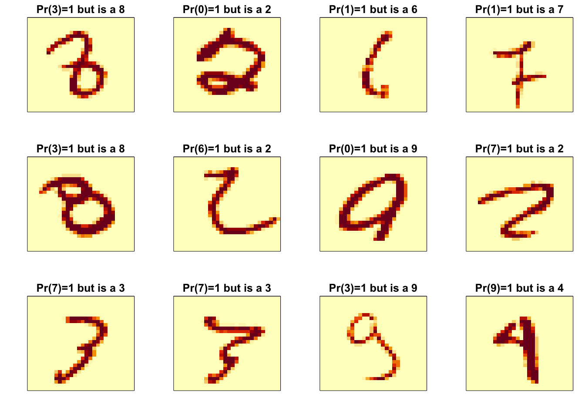
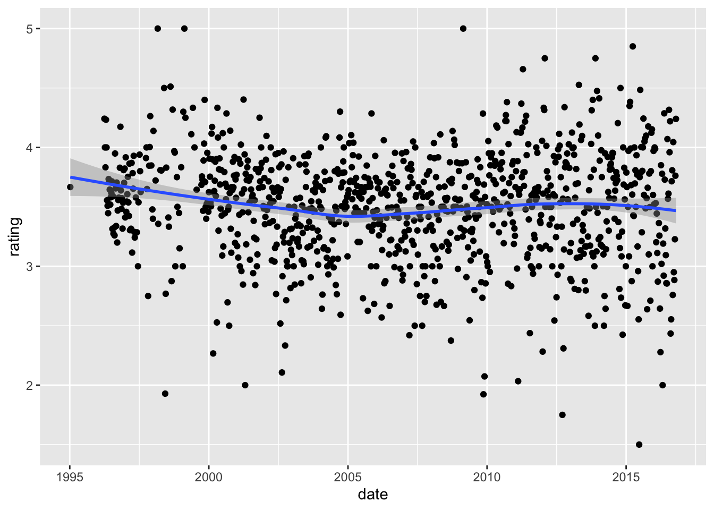
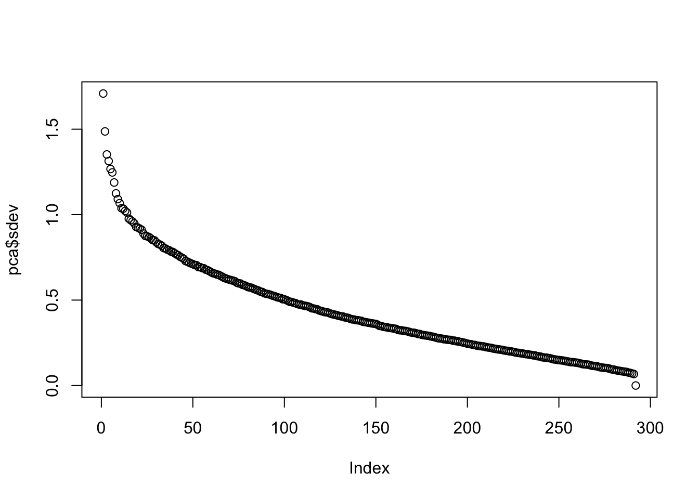
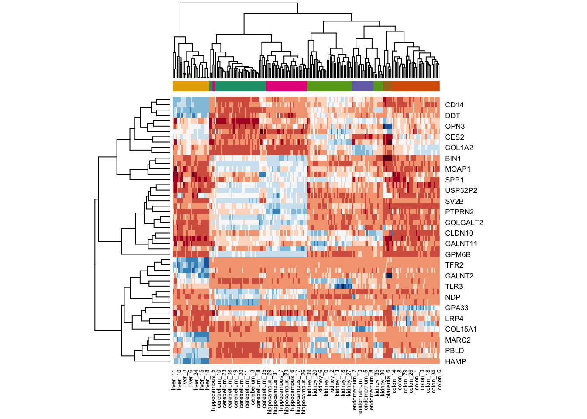

7 Section 6 - Model Fitting and Recommendation Systems Overview
In the Model Fitting and Recommendation Systems section, you will learn how to apply the machine learning algorithms you have learned.
After completing this section, you will be able to:
- Apply the methods we have learned to an example, the MNIST digits.
- Build a movie recommendation system using machine learning.
- Penalize large estimates that come from small sample sizes using regularization.
This section has three parts: case study: MNIST, recommendation systems, and regularization.
7.1 Case Study: MNIST
There is a link to the relevant section of the textbook: Machine learning in practice
Key points
- We will apply what we have learned in the course on the Modified National Institute of Standards and Technology database (MNIST) digits, a popular dataset used in machine learning competitions.
Code
mnist <- read_mnist()
names(mnist)## [1] "train" "test"dim(mnist$train$images)## [1] 60000 784class(mnist$train$labels)## [1] "integer"table(mnist$train$labels)##
## 0 1 2 3 4 5 6 7 8 9
## 5923 6742 5958 6131 5842 5421 5918 6265 5851 5949# sample 10k rows from training set, 1k rows from test set
set.seed(123)
index <- sample(nrow(mnist$train$images), 10000)
x <- mnist$train$images[index,]
y <- factor(mnist$train$labels[index])
index <- sample(nrow(mnist$test$images), 1000)
#note that the line above is the corrected code - code in video at 0:52 is incorrect
x_test <- mnist$test$images[index,]
y_test <- factor(mnist$test$labels[index])7.2 Preprocessing MNIST Data
There is a link to the relevant section of the textbook: Preprocessing
Key points
- Common **preprocessing steps include:
- standardizing or transforming predictors and
- removing predictors that are not useful, are highly correlated with others, have very few non-unique values, or have close to zero variation.
Code
sds <- colSds(x)
qplot(sds, bins = 256, color = I("black"))nzv <- nearZeroVar(x)
image(matrix(1:784 %in% nzv, 28, 28))col_index <- setdiff(1:ncol(x), nzv)
length(col_index)## [1] 2527.3 Model Fitting for MNIST Data
There is a link to the relevant section of the textbook: k-nearest neighbor and random forest
Key points
- The caret package requires that we add column names to the feature matrices.
- In general, it is a good idea to test out a small subset of the data first to get an idea of how long your code will take to run.
Code
colnames(x) <- 1:ncol(mnist$train$images)
colnames(x_test) <- colnames(x)
control <- trainControl(method = "cv", number = 10, p = .9)
train_knn <- train(x[,col_index], y,
method = "knn",
tuneGrid = data.frame(k = c(1,3,5,7)),
trControl = control)
ggplot(train_knn)n <- 1000
b <- 2
index <- sample(nrow(x), n)
control <- trainControl(method = "cv", number = b, p = .9)
train_knn <- train(x[index ,col_index], y[index],
method = "knn",
tuneGrid = data.frame(k = c(3,5,7)),
trControl = control)
fit_knn <- knn3(x[ ,col_index], y, k = 3)
y_hat_knn <- predict(fit_knn,
x_test[, col_index],
type="class")
cm <- confusionMatrix(y_hat_knn, factor(y_test))
cm$overall["Accuracy"]## Accuracy
## 0.955cm$byClass[,1:2]## Sensitivity Specificity
## Class: 0 1.000 0.998
## Class: 1 1.000 0.992
## Class: 2 0.953 0.999
## Class: 3 0.917 0.993
## Class: 4 0.936 0.996
## Class: 5 0.971 0.991
## Class: 6 0.990 0.998
## Class: 7 0.945 0.994
## Class: 8 0.846 0.998
## Class: 9 0.971 0.991control <- trainControl(method="cv", number = 5, p = 0.8)
grid <- expand.grid(minNode = c(1,5) , predFixed = c(10, 15, 25, 35, 50))
train_rf <- train(x[, col_index], y,
method = "Rborist",
nTree = 50,
trControl = control,
tuneGrid = grid,
nSamp = 5000)
ggplot(train_rf)train_rf$bestTune## predFixed minNode
## 1 10 1fit_rf <- Rborist(x[, col_index], y,
nTree = 1000,
minNode = train_rf$bestTune$minNode,
predFixed = train_rf$bestTune$predFixed)
y_hat_rf <- factor(levels(y)[predict(fit_rf, x_test[ ,col_index])$yPred])
cm <- confusionMatrix(y_hat_rf, y_test)
cm$overall["Accuracy"]## Accuracy
## 0.959rafalib::mypar(3,4)
for(i in 1:12){
image(matrix(x_test[i,], 28, 28)[, 28:1],
main = paste("Our prediction:", y_hat_rf[i]),
xaxt="n", yaxt="n")
}7.4 Variable Importance
There is a link to the relevant sections of the textbook: Variable importance and Visual assessments
Key points
- The Rborist package does not currently support variable importance calculations, but the randomForest package does.
- An important part of data science is visualizing results to determine why we are failing.
Code
x <- mnist$train$images[index,]
y <- factor(mnist$train$labels[index])
rf <- randomForest(x, y, ntree = 50)
imp <- importance(rf)
imp## MeanDecreaseGini
## 1 0.0000
## 2 0.0000
## 3 0.0000
## 4 0.0000
## 5 0.0000
## 6 0.0000
## 7 0.0000
## 8 0.0000
## 9 0.0000
## 10 0.0000
## 11 0.0000
## 12 0.0000
## 13 0.0000
## 14 0.0000
## 15 0.0000
## 16 0.0000
## 17 0.0000
## 18 0.0000
## 19 0.0000
## 20 0.0000
## 21 0.0000
## 22 0.0000
## 23 0.0000
## 24 0.0000
## 25 0.0000
## 26 0.0000
## 27 0.0000
## 28 0.0000
## 29 0.0000
## 30 0.0000
## 31 0.0000
## 32 0.0000
## 33 0.0000
## 34 0.0000
## 35 0.0000
## 36 0.0000
## 37 0.0000
## 38 0.0000
## 39 0.0000
## 40 0.0000
## 41 0.0000
## 42 0.0000
## 43 0.0000
## 44 0.0000
## 45 0.0000
## 46 0.0000
## 47 0.0000
## 48 0.0000
## 49 0.0000
## 50 0.0000
## 51 0.0000
## 52 0.0000
## 53 0.0000
## 54 0.0000
## 55 0.0000
## 56 0.0000
## 57 0.0000
## 58 0.0000
## 59 0.0000
## 60 0.0000
## 61 0.0000
## 62 0.0000
## 63 0.0000
## 64 0.0000
## 65 0.0000
## 66 0.0000
## 67 0.0000
## 68 0.0000
## 69 0.0000
## 70 0.0200
## 71 0.0386
## 72 0.3364
## 73 0.4292
## 74 0.1083
## 75 0.1228
## 76 0.0000
## 77 0.0000
## 78 0.0359
## 79 0.0000
## 80 0.0000
## 81 0.0000
## 82 0.0000
## 83 0.0000
## 84 0.0000
## 85 0.0000
## 86 0.0000
## 87 0.0000
## 88 0.0000
## 89 0.0000
## 90 0.0000
## 91 0.0000
## 92 0.0000
## 93 0.0267
## 94 0.0702
## 95 0.0267
## 96 0.1533
## 97 0.5302
## 98 0.1691
## 99 0.1951
## 100 4.3825
## 101 3.7575
## 102 4.0716
## 103 1.4450
## 104 0.5788
## 105 0.0756
## 106 0.0300
## 107 0.0916
## 108 0.0000
## 109 0.0000
## 110 0.0000
## 111 0.0000
## 112 0.0000
## 113 0.0000
## 114 0.0000
## 115 0.0000
## 116 0.0000
## 117 0.0000
## 118 0.0000
## 119 0.0368
## 120 0.0958
## 121 0.0368
## 122 0.4054
## 123 0.1888
## 124 1.6623
## 125 1.0255
## 126 0.9706
## 127 0.9350
## 128 1.8896
## 129 2.3448
## 130 0.9726
## 131 0.7841
## 132 0.3058
## 133 0.2913
## 134 0.0611
## 135 0.4770
## 136 0.0000
## 137 0.0000
## 138 0.0000
## 139 0.0000
## 140 0.0000
## 141 0.0000
## 142 0.0000
## 143 0.0000
## 144 0.0000
## 145 0.0450
## 146 0.4217
## 147 0.1030
## 148 0.4381
## 149 0.2826
## 150 0.6646
## 151 1.4041
## 152 2.1603
## 153 3.1023
## 154 1.7377
## 155 2.9828
## 156 4.4697
## 157 4.6632
## 158 1.9789
## 159 1.1770
## 160 1.2593
## 161 1.1914
## 162 0.4314
## 163 0.9320
## 164 0.5088
## 165 0.0583
## 166 0.0000
## 167 0.0000
## 168 0.0000
## 169 0.0000
## 170 0.0000
## 171 0.0000
## 172 0.0337
## 173 0.0000
## 174 0.0467
## 175 0.0971
## 176 0.2638
## 177 0.8443
## 178 1.3889
## 179 2.3951
## 180 1.8932
## 181 3.7141
## 182 3.1491
## 183 2.5722
## 184 3.5550
## 185 3.7543
## 186 4.1136
## 187 1.2190
## 188 2.7119
## 189 1.3368
## 190 0.7848
## 191 0.5944
## 192 0.6998
## 193 0.0367
## 194 0.0000
## 195 0.0560
## 196 0.0000
## 197 0.0000
## 198 0.0000
## 199 0.0000
## 200 0.0000
## 201 0.0653
## 202 0.1618
## 203 0.2514
## 204 0.1467
## 205 0.7132
## 206 1.0696
## 207 1.8813
## 208 1.5488
## 209 1.6265
## 210 2.3821
## 211 4.1416
## 212 6.0898
## 213 2.8040
## 214 1.9544
## 215 2.9735
## 216 1.1595
## 217 1.2301
## 218 0.7179
## 219 0.8997
## 220 1.4020
## 221 0.8376
## 222 0.0376
## 223 0.0000
## 224 0.0000
## 225 0.0000
## 226 0.0000
## 227 0.0000
## 228 0.0000
## 229 0.1500
## 230 0.1951
## 231 0.6163
## 232 1.3442
## 233 0.8332
## 234 1.1122
## 235 3.0582
## 236 4.9129
## 237 3.2573
## 238 2.7814
## 239 2.9401
## 240 5.4603
## 241 3.9843
## 242 3.9568
## 243 1.1594
## 244 1.9290
## 245 1.5714
## 246 1.1573
## 247 0.9894
## 248 0.7398
## 249 0.2346
## 250 0.5157
## 251 0.0000
## 252 0.0000
## 253 0.0000
## 254 0.0000
## 255 0.0000
## 256 0.0000
## 257 0.0000
## 258 0.0722
## 259 0.6696
## 260 0.3971
## 261 1.1764
## 262 2.2870
## 263 2.6467
## 264 3.0094
## 265 5.8341
## 266 2.1984
## 267 3.1962
## 268 3.5770
## 269 2.7636
## 270 5.0814
## 271 4.8756
## 272 2.4102
## 273 2.2899
## 274 1.2372
## 275 0.3960
## 276 0.7806
## 277 0.2840
## 278 0.0000
## 279 0.0000
## 280 0.0000
## 281 0.0000
## 282 0.0000
## 283 0.0000
## 284 0.0000
## 285 0.1978
## 286 0.0691
## 287 0.8360
## 288 0.8459
## 289 0.9408
## 290 2.0882
## 291 4.3131
## 292 3.5580
## 293 3.2671
## 294 1.9374
## 295 1.9242
## 296 2.6329
## 297 3.0550
## 298 2.8851
## 299 3.3400
## 300 2.2500
## 301 2.8778
## 302 1.3096
## 303 0.5058
## 304 0.1055
## 305 0.1202
## 306 0.0000
## 307 0.0000
## 308 0.0000
## 309 0.0000
## 310 0.0000
## 311 0.0000
## 312 0.0000
## 313 0.0267
## 314 0.1652
## 315 1.0535
## 316 0.9770
## 317 1.1757
## 318 3.9662
## 319 7.4847
## 320 5.0866
## 321 3.2152
## 322 2.9141
## 323 3.5169
## 324 4.8595
## 325 3.6001
## 326 3.6972
## 327 2.4491
## 328 3.2116
## 329 1.3368
## 330 2.0959
## 331 0.6248
## 332 0.1734
## 333 0.1204
## 334 0.0000
## 335 0.0000
## 336 0.0000
## 337 0.0000
## 338 0.0000
## 339 0.0000
## 340 0.0669
## 341 0.0589
## 342 0.0710
## 343 0.7515
## 344 1.5224
## 345 2.9044
## 346 3.4698
## 347 2.9629
## 348 6.6917
## 349 2.8665
## 350 2.5272
## 351 5.2107
## 352 5.2579
## 353 2.5862
## 354 4.0516
## 355 3.9797
## 356 1.2102
## 357 1.9677
## 358 2.8926
## 359 2.4807
## 360 0.2659
## 361 0.0710
## 362 0.0000
## 363 0.0000
## 364 0.0000
## 365 0.0000
## 366 0.0000
## 367 0.0000
## 368 0.0000
## 369 0.0267
## 370 0.1961
## 371 0.6116
## 372 0.9917
## 373 2.6019
## 374 4.5573
## 375 5.0599
## 376 6.0905
## 377 5.3284
## 378 5.1077
## 379 9.6768
## 380 3.0461
## 381 4.7315
## 382 4.3859
## 383 4.5496
## 384 1.2225
## 385 2.1867
## 386 1.7976
## 387 1.3636
## 388 0.2294
## 389 0.0000
## 390 0.0000
## 391 0.0000
## 392 0.0000
## 393 0.0000
## 394 0.0000
## 395 0.0000
## 396 0.0000
## 397 0.2786
## 398 0.3010
## 399 1.2454
## 400 3.1789
## 401 4.4449
## 402 5.5182
## 403 4.3270
## 404 4.0243
## 405 4.0694
## 406 5.5033
## 407 6.6132
## 408 3.8076
## 409 5.1868
## 410 5.2291
## 411 4.3761
## 412 1.2487
## 413 1.6620
## 414 1.7047
## 415 3.3018
## 416 0.3135
## 417 0.0667
## 418 0.0000
## 419 0.0000
## 420 0.0000
## 421 0.0000
## 422 0.0000
## 423 0.0000
## 424 0.0200
## 425 0.1010
## 426 0.3706
## 427 0.8750
## 428 5.2063
## 429 3.6503
## 430 5.5588
## 431 6.5687
## 432 6.3710
## 433 3.7244
## 434 6.4584
## 435 3.8925
## 436 3.1450
## 437 4.6127
## 438 5.8932
## 439 3.6514
## 440 1.8678
## 441 0.7452
## 442 2.3169
## 443 1.7684
## 444 0.3237
## 445 0.0000
## 446 0.0000
## 447 0.0000
## 448 0.0000
## 449 0.0000
## 450 0.0000
## 451 0.0000
## 452 0.0384
## 453 0.0814
## 454 0.5199
## 455 0.5373
## 456 5.9110
## 457 2.8719
## 458 4.4087
## 459 2.8772
## 460 2.8043
## 461 4.5564
## 462 9.2761
## 463 3.5203
## 464 3.9495
## 465 3.0245
## 466 3.5809
## 467 2.6407
## 468 2.9175
## 469 1.9749
## 470 2.2785
## 471 0.5547
## 472 0.2392
## 473 0.1860
## 474 0.0200
## 475 0.0000
## 476 0.0000
## 477 0.0000
## 478 0.0000
## 479 0.0000
## 480 0.0383
## 481 0.0387
## 482 0.4292
## 483 1.6728
## 484 2.5022
## 485 0.4138
## 486 2.9169
## 487 3.0419
## 488 4.1365
## 489 7.1352
## 490 4.9019
## 491 2.8327
## 492 2.5211
## 493 1.7125
## 494 2.7378
## 495 2.8248
## 496 2.0614
## 497 2.3113
## 498 0.9727
## 499 1.6279
## 500 0.5343
## 501 0.3333
## 502 0.0000
## 503 0.0000
## 504 0.0000
## 505 0.0000
## 506 0.0000
## 507 0.0000
## 508 0.0676
## 509 0.2275
## 510 0.2708
## 511 2.4200
## 512 2.5823
## 513 3.0054
## 514 3.4622
## 515 4.5320
## 516 6.1263
## 517 2.3824
## 518 3.3455
## 519 1.9886
## 520 2.9348
## 521 1.1133
## 522 1.4845
## 523 3.0486
## 524 1.7594
## 525 2.0075
## 526 1.0956
## 527 0.7642
## 528 0.5527
## 529 0.0702
## 530 0.0000
## 531 0.0000
## 532 0.0000
## 533 0.0000
## 534 0.0000
## 535 0.0000
## 536 0.0000
## 537 0.1836
## 538 0.8058
## 539 3.7220
## 540 5.5971
## 541 1.8936
## 542 2.1503
## 543 5.3189
## 544 3.1706
## 545 2.5217
## 546 2.2154
## 547 1.6559
## 548 2.3495
## 549 0.9677
## 550 2.5048
## 551 2.7026
## 552 1.4848
## 553 1.0656
## 554 0.5196
## 555 0.4745
## 556 0.5605
## 557 0.1946
## 558 0.0000
## 559 0.0000
## 560 0.0000
## 561 0.0000
## 562 0.0000
## 563 0.0000
## 564 0.0000
## 565 0.0360
## 566 0.7484
## 567 2.0237
## 568 4.3082
## 569 3.1404
## 570 4.0156
## 571 3.2594
## 572 3.2163
## 573 3.2371
## 574 2.6207
## 575 1.3211
## 576 1.4396
## 577 1.4215
## 578 2.6131
## 579 2.1551
## 580 1.6976
## 581 0.4295
## 582 0.7656
## 583 0.1415
## 584 0.1012
## 585 0.0653
## 586 0.1405
## 587 0.0000
## 588 0.0000
## 589 0.0000
## 590 0.0000
## 591 0.0000
## 592 0.0000
## 593 0.3101
## 594 0.8712
## 595 1.2101
## 596 1.5286
## 597 3.0302
## 598 3.8308
## 599 3.8574
## 600 1.4988
## 601 1.4851
## 602 2.2346
## 603 1.6009
## 604 1.5888
## 605 1.7945
## 606 1.9097
## 607 1.8448
## 608 0.7688
## 609 1.4031
## 610 0.4461
## 611 0.1067
## 612 0.2739
## 613 0.0000
## 614 0.0000
## 615 0.0000
## 616 0.0000
## 617 0.0000
## 618 0.0000
## 619 0.0000
## 620 0.0390
## 621 0.1751
## 622 0.1036
## 623 1.4516
## 624 2.0503
## 625 1.8557
## 626 4.5113
## 627 2.0373
## 628 1.6867
## 629 2.8683
## 630 2.0734
## 631 1.8517
## 632 2.4817
## 633 1.4786
## 634 1.3862
## 635 1.1019
## 636 1.0241
## 637 0.4047
## 638 0.3250
## 639 0.0655
## 640 0.0000
## 641 0.0400
## 642 0.0000
## 643 0.0000
## 644 0.0000
## 645 0.0000
## 646 0.0000
## 647 0.0000
## 648 0.0000
## 649 0.0000
## 650 0.0360
## 651 0.5241
## 652 0.7703
## 653 1.3069
## 654 2.9215
## 655 1.3210
## 656 4.7766
## 657 3.5148
## 658 3.5579
## 659 2.7827
## 660 2.0031
## 661 1.1806
## 662 0.6780
## 663 0.4173
## 664 0.5286
## 665 0.0000
## 666 0.0840
## 667 0.1122
## 668 0.1322
## 669 0.0644
## 670 0.0000
## 671 0.0000
## 672 0.0000
## 673 0.0000
## 674 0.0000
## 675 0.0000
## 676 0.0000
## 677 0.0923
## 678 0.1728
## 679 0.2596
## 680 0.2985
## 681 0.2241
## 682 0.5979
## 683 1.1140
## 684 1.2162
## 685 1.9263
## 686 0.9836
## 687 1.6218
## 688 0.6831
## 689 0.4048
## 690 0.4089
## 691 0.4024
## 692 0.0845
## 693 0.1489
## 694 0.0533
## 695 0.0000
## 696 0.0394
## 697 0.0000
## 698 0.0000
## 699 0.0000
## 700 0.0000
## 701 0.0000
## 702 0.0000
## 703 0.0000
## 704 0.0000
## 705 0.0000
## 706 0.0378
## 707 0.0745
## 708 0.0460
## 709 0.0400
## 710 0.8688
## 711 0.5995
## 712 1.3124
## 713 0.3276
## 714 2.1420
## 715 0.5888
## 716 0.1989
## 717 0.6024
## 718 0.1311
## 719 0.1512
## 720 0.0356
## 721 0.0000
## 722 0.0000
## 723 0.1434
## 724 0.0000
## 725 0.0000
## 726 0.0000
## 727 0.0000
## 728 0.0000
## 729 0.0000
## 730 0.0000
## 731 0.0000
## 732 0.0000
## 733 0.0000
## 734 0.0000
## 735 0.0000
## 736 0.0367
## 737 0.0000
## 738 0.2851
## 739 0.5083
## 740 0.2420
## 741 0.0676
## 742 0.0320
## 743 0.0709
## 744 0.2129
## 745 0.0382
## 746 0.0350
## 747 0.0326
## 748 0.0000
## 749 0.0000
## 750 0.0393
## 751 0.0000
## 752 0.0000
## 753 0.0000
## 754 0.0000
## 755 0.0000
## 756 0.0000
## 757 0.0000
## 758 0.0000
## 759 0.0000
## 760 0.0000
## 761 0.0000
## 762 0.0000
## 763 0.0000
## 764 0.0000
## 765 0.0000
## 766 0.0000
## 767 0.0000
## 768 0.0000
## 769 0.0000
## 770 0.0000
## 771 0.0371
## 772 0.0000
## 773 0.0000
## 774 0.0000
## 775 0.0000
## 776 0.0000
## 777 0.0000
## 778 0.0000
## 779 0.0000
## 780 0.0000
## 781 0.0000
## 782 0.0000
## 783 0.0000
## 784 0.0000image(matrix(imp, 28, 28))p_max <- predict(fit_knn, x_test[,col_index])
p_max <- apply(p_max, 1, max)
ind <- which(y_hat_knn != y_test)
ind <- ind[order(p_max[ind], decreasing = TRUE)]
rafalib::mypar(3,4)
for(i in ind[1:12]){
image(matrix(x_test[i,], 28, 28)[, 28:1],
main = paste0("Pr(",y_hat_knn[i],")=",round(p_max[i], 2),
" but is a ",y_test[i]),
xaxt="n", yaxt="n")
}
p_max <- predict(fit_rf, x_test[,col_index])$census
p_max <- p_max / rowSums(p_max)
p_max <- apply(p_max, 1, max)
ind <- which(y_hat_rf != y_test)
ind <- ind[order(p_max[ind], decreasing = TRUE)]
rafalib::mypar(3,4)
for(i in ind[1:12]){
image(matrix(x_test[i,], 28, 28)[, 28:1],
main = paste0("Pr(",y_hat_rf[i],")=",round(p_max[i], 2),
" but is a ",y_test[i]),
xaxt="n", yaxt="n")
}7.5 Ensembles
There is a link to the relevant sections of the textbook: Ensembles
Key points
- Ensembles combine multiple machine learning algorithms into one model to improve predictions.
Code
p_rf <- predict(fit_rf, x_test[,col_index])$census
p_rf <- p_rf / rowSums(p_rf)
p_knn <- predict(fit_knn, x_test[,col_index])
p <- (p_rf + p_knn)/2
y_pred <- factor(apply(p, 1, which.max)-1)
confusionMatrix(y_pred, y_test)## Confusion Matrix and Statistics
##
## Reference
## Prediction 0 1 2 3 4 5 6 7 8 9
## 0 102 0 1 0 0 0 0 0 0 1
## 1 0 121 1 0 1 1 1 2 0 0
## 2 0 0 102 1 0 0 0 3 0 0
## 3 0 0 0 78 0 1 0 0 3 2
## 4 0 0 0 0 102 0 0 1 1 0
## 5 0 0 0 2 0 68 0 0 5 0
## 6 0 0 1 0 1 0 101 0 0 0
## 7 0 0 1 2 0 0 0 102 0 0
## 8 0 0 0 1 0 0 0 0 81 0
## 9 0 0 0 0 5 0 0 2 1 102
##
## Overall Statistics
##
## Accuracy : 0.959
## 95% CI : (0.945, 0.97)
## No Information Rate : 0.121
## P-Value [Acc > NIR] : <2e-16
##
## Kappa : 0.954
##
## Mcnemar's Test P-Value : NA
##
## Statistics by Class:
##
## Class: 0 Class: 1 Class: 2 Class: 3 Class: 4 Class: 5 Class: 6 Class: 7 Class: 8 Class: 9
## Sensitivity 1.000 1.000 0.962 0.929 0.936 0.971 0.990 0.927 0.890 0.971
## Specificity 0.998 0.993 0.996 0.993 0.998 0.992 0.998 0.997 0.999 0.991
## Pos Pred Value 0.981 0.953 0.962 0.929 0.981 0.907 0.981 0.971 0.988 0.927
## Neg Pred Value 1.000 1.000 0.996 0.993 0.992 0.998 0.999 0.991 0.989 0.997
## Prevalence 0.102 0.121 0.106 0.084 0.109 0.070 0.102 0.110 0.091 0.105
## Detection Rate 0.102 0.121 0.102 0.078 0.102 0.068 0.101 0.102 0.081 0.102
## Detection Prevalence 0.104 0.127 0.106 0.084 0.104 0.075 0.103 0.105 0.082 0.110
## Balanced Accuracy 0.999 0.997 0.979 0.961 0.967 0.982 0.994 0.962 0.945 0.9817.6 Comprehension Check - Ensembles
- Use the training set to build a model with several of the models available from the caret package. We will test out 10 of the most common machine learning models in this exercise:
models <- c("glm", "lda", "naive_bayes", "svmLinear", "knn", "gamLoess", "multinom", "qda", "rf", "adaboost")Apply all of these models using train() with all the default parameters. You may need to install some packages. Keep in mind that you will probably get some warnings. Also, it will probably take a while to train all of the models - be patient!
Run the following code to train the various models:
# set.seed(1) # if using R 3.5 or earlier
set.seed(1, sample.kind = "Rounding") # if using R 3.6 or later## Warning in set.seed(1, sample.kind = "Rounding"): non-uniform 'Rounding' sampler useddata("mnist_27")
fits <- lapply(models, function(model){
print(model)
train(y ~ ., method = model, data = mnist_27$train)
}) ## [1] "glm"
## [1] "lda"
## [1] "naive_bayes"
## [1] "svmLinear"
## [1] "knn"
## [1] "gamLoess"## Warning in gam.lo(data[["lo(x_1, span = 0.5, degree = 1)"]], z, w, span = 0.5, : eval 0.46667## Warning in gam.lo(data[["lo(x_1, span = 0.5, degree = 1)"]], z, w, span = 0.5, : upperlimit 0.41586## Warning in gam.lo(data[["lo(x_1, span = 0.5, degree = 1)"]], z, w, span = 0.5, : extrapolation not allowed with blending## Warning in gam.lo(data[["lo(x_1, span = 0.5, degree = 1)"]], z, w, span = 0.5, : eval 0.4375## Warning in gam.lo(data[["lo(x_1, span = 0.5, degree = 1)"]], z, w, span = 0.5, : upperlimit 0.41586## Warning in gam.lo(data[["lo(x_1, span = 0.5, degree = 1)"]], z, w, span = 0.5, : extrapolation not allowed with blending## Warning in gam.lo(data[["lo(x_2, span = 0.5, degree = 1)"]], z, w, span = 0.5, : eval 0.089286## Warning in gam.lo(data[["lo(x_2, span = 0.5, degree = 1)"]], z, w, span = 0.5, : lowerlimit 0.10703## Warning in gam.lo(data[["lo(x_2, span = 0.5, degree = 1)"]], z, w, span = 0.5, : extrapolation not allowed with blending## Warning in gam.lo(data[["lo(x_2, span = 0.5, degree = 1)"]], z, w, span = 0.5, : eval 0.094737## Warning in gam.lo(data[["lo(x_2, span = 0.5, degree = 1)"]], z, w, span = 0.5, : lowerlimit 0.10703## Warning in gam.lo(data[["lo(x_2, span = 0.5, degree = 1)"]], z, w, span = 0.5, : extrapolation not allowed with blending## Warning in gam.lo(data[["lo(x_2, span = 0.5, degree = 1)"]], z, w, span = 0.5, : eval 0.089286## Warning in gam.lo(data[["lo(x_2, span = 0.5, degree = 1)"]], z, w, span = 0.5, : lowerlimit 0.092518## Warning in gam.lo(data[["lo(x_2, span = 0.5, degree = 1)"]], z, w, span = 0.5, : extrapolation not allowed with blending## Warning in gam.lo(data[["lo(x_2, span = 0.5, degree = 1)"]], z, w, span = 0.5, : eval 0.57895## Warning in gam.lo(data[["lo(x_2, span = 0.5, degree = 1)"]], z, w, span = 0.5, : upperlimit 0.54068## Warning in gam.lo(data[["lo(x_2, span = 0.5, degree = 1)"]], z, w, span = 0.5, : extrapolation not allowed with blending## Warning in gam.lo(data[["lo(x_1, span = 0.5, degree = 1)"]], z, w, span = 0.5, : eval 0.46667## Warning in gam.lo(data[["lo(x_1, span = 0.5, degree = 1)"]], z, w, span = 0.5, : upperlimit 0.43969## Warning in gam.lo(data[["lo(x_1, span = 0.5, degree = 1)"]], z, w, span = 0.5, : extrapolation not allowed with blending## Warning in gam.lo(data[["lo(x_1, span = 0.5, degree = 1)"]], z, w, span = 0.5, : eval 0.46667## Warning in gam.lo(data[["lo(x_1, span = 0.5, degree = 1)"]], z, w, span = 0.5, : upperlimit 0.43969## Warning in gam.lo(data[["lo(x_1, span = 0.5, degree = 1)"]], z, w, span = 0.5, : extrapolation not allowed with blending## Warning in gam.lo(data[["lo(x_2, span = 0.5, degree = 1)"]], z, w, span = 0.5, : eval 0.089286## Warning in gam.lo(data[["lo(x_2, span = 0.5, degree = 1)"]], z, w, span = 0.5, : lowerlimit 0.092518## Warning in gam.lo(data[["lo(x_2, span = 0.5, degree = 1)"]], z, w, span = 0.5, : extrapolation not allowed with blending## Warning in gam.lo(data[["lo(x_2, span = 0.5, degree = 1)"]], z, w, span = 0.5, : eval 0.57895## Warning in gam.lo(data[["lo(x_2, span = 0.5, degree = 1)"]], z, w, span = 0.5, : upperlimit 0.54068## Warning in gam.lo(data[["lo(x_2, span = 0.5, degree = 1)"]], z, w, span = 0.5, : extrapolation not allowed with blending## Warning in gam.lo(data[["lo(x_1, span = 0.5, degree = 1)"]], z, w, span = 0.5, : eval 0.46667## Warning in gam.lo(data[["lo(x_1, span = 0.5, degree = 1)"]], z, w, span = 0.5, : upperlimit 0.43969## Warning in gam.lo(data[["lo(x_1, span = 0.5, degree = 1)"]], z, w, span = 0.5, : extrapolation not allowed with blending## Warning in gam.lo(data[["lo(x_2, span = 0.5, degree = 1)"]], z, w, span = 0.5, : eval 0.089286## Warning in gam.lo(data[["lo(x_2, span = 0.5, degree = 1)"]], z, w, span = 0.5, : lowerlimit 0.092316## Warning in gam.lo(data[["lo(x_2, span = 0.5, degree = 1)"]], z, w, span = 0.5, : extrapolation not allowed with blending## Warning in gam.lo(data[["lo(x_2, span = 0.5, degree = 1)"]], z, w, span = 0.5, : eval 0.089286## Warning in gam.lo(data[["lo(x_2, span = 0.5, degree = 1)"]], z, w, span = 0.5, : lowerlimit 0.092316## Warning in gam.lo(data[["lo(x_2, span = 0.5, degree = 1)"]], z, w, span = 0.5, : extrapolation not allowed with blending## Warning in gam.lo(data[["lo(x_2, span = 0.5, degree = 1)"]], z, w, span = 0.5, : eval 0.53846## Warning in gam.lo(data[["lo(x_2, span = 0.5, degree = 1)"]], z, w, span = 0.5, : upperlimit 0.53555## Warning in gam.lo(data[["lo(x_2, span = 0.5, degree = 1)"]], z, w, span = 0.5, : extrapolation not allowed with blending## Warning in gam.lo(data[["lo(x_2, span = 0.5, degree = 1)"]], z, w, span = 0.5, : eval 0.57895## Warning in gam.lo(data[["lo(x_2, span = 0.5, degree = 1)"]], z, w, span = 0.5, : upperlimit 0.53555## Warning in gam.lo(data[["lo(x_2, span = 0.5, degree = 1)"]], z, w, span = 0.5, : extrapolation not allowed with blending## Warning in gam.lo(data[["lo(x_1, span = 0.5, degree = 1)"]], z, w, span = 0.5, : eval 0.46667## Warning in gam.lo(data[["lo(x_1, span = 0.5, degree = 1)"]], z, w, span = 0.5, : upperlimit 0.43969## Warning in gam.lo(data[["lo(x_1, span = 0.5, degree = 1)"]], z, w, span = 0.5, : extrapolation not allowed with blending## Warning in gam.lo(data[["lo(x_2, span = 0.5, degree = 1)"]], z, w, span = 0.5, : eval 0.089286## Warning in gam.lo(data[["lo(x_2, span = 0.5, degree = 1)"]], z, w, span = 0.5, : lowerlimit 0.10703## Warning in gam.lo(data[["lo(x_2, span = 0.5, degree = 1)"]], z, w, span = 0.5, : extrapolation not allowed with blending## Warning in gam.lo(data[["lo(x_2, span = 0.5, degree = 1)"]], z, w, span = 0.5, : eval 0.094737## Warning in gam.lo(data[["lo(x_2, span = 0.5, degree = 1)"]], z, w, span = 0.5, : lowerlimit 0.10703## Warning in gam.lo(data[["lo(x_2, span = 0.5, degree = 1)"]], z, w, span = 0.5, : extrapolation not allowed with blending## Warning in gam.lo(data[["lo(x_2, span = 0.5, degree = 1)"]], z, w, span = 0.5, : eval 0.57895## Warning in gam.lo(data[["lo(x_2, span = 0.5, degree = 1)"]], z, w, span = 0.5, : upperlimit 0.54071## Warning in gam.lo(data[["lo(x_2, span = 0.5, degree = 1)"]], z, w, span = 0.5, : extrapolation not allowed with blending## Warning in gam.lo(data[["lo(x_1, span = 0.5, degree = 1)"]], z, w, span = 0.5, : eval 0.46667## Warning in gam.lo(data[["lo(x_1, span = 0.5, degree = 1)"]], z, w, span = 0.5, : upperlimit 0.43969## Warning in gam.lo(data[["lo(x_1, span = 0.5, degree = 1)"]], z, w, span = 0.5, : extrapolation not allowed with blending## Warning in gam.lo(data[["lo(x_2, span = 0.5, degree = 1)"]], z, w, span = 0.5, : eval 0.089286## Warning in gam.lo(data[["lo(x_2, span = 0.5, degree = 1)"]], z, w, span = 0.5, : lowerlimit 0.092316## Warning in gam.lo(data[["lo(x_2, span = 0.5, degree = 1)"]], z, w, span = 0.5, : extrapolation not allowed with blending## Warning in gam.lo(data[["lo(x_1, span = 0.5, degree = 1)"]], z, w, span = 0.5, : eval 0.46667## Warning in gam.lo(data[["lo(x_1, span = 0.5, degree = 1)"]], z, w, span = 0.5, : upperlimit 0.40628## Warning in gam.lo(data[["lo(x_1, span = 0.5, degree = 1)"]], z, w, span = 0.5, : extrapolation not allowed with blending## Warning in gam.lo(data[["lo(x_1, span = 0.5, degree = 1)"]], z, w, span = 0.5, : eval 0.41379## Warning in gam.lo(data[["lo(x_1, span = 0.5, degree = 1)"]], z, w, span = 0.5, : upperlimit 0.40628## Warning in gam.lo(data[["lo(x_1, span = 0.5, degree = 1)"]], z, w, span = 0.5, : extrapolation not allowed with blending## Warning in gam.lo(data[["lo(x_1, span = 0.5, degree = 1)"]], z, w, span = 0.5, : eval 0.4375## Warning in gam.lo(data[["lo(x_1, span = 0.5, degree = 1)"]], z, w, span = 0.5, : upperlimit 0.40628## Warning in gam.lo(data[["lo(x_1, span = 0.5, degree = 1)"]], z, w, span = 0.5, : extrapolation not allowed with blending## Warning in gam.lo(data[["lo(x_2, span = 0.5, degree = 1)"]], z, w, span = 0.5, : eval 0.089286## Warning in gam.lo(data[["lo(x_2, span = 0.5, degree = 1)"]], z, w, span = 0.5, : lowerlimit 0.092518## Warning in gam.lo(data[["lo(x_2, span = 0.5, degree = 1)"]], z, w, span = 0.5, : extrapolation not allowed with blending## Warning in gam.lo(data[["lo(x_2, span = 0.5, degree = 1)"]], z, w, span = 0.5, : eval 0.57895## Warning in gam.lo(data[["lo(x_2, span = 0.5, degree = 1)"]], z, w, span = 0.5, : upperlimit 0.54068## Warning in gam.lo(data[["lo(x_2, span = 0.5, degree = 1)"]], z, w, span = 0.5, : extrapolation not allowed with blending## Warning in gam.lo(data[["lo(x_2, span = 0.5, degree = 1)"]], z, w, span = 0.5, : eval 0.089286## Warning in gam.lo(data[["lo(x_2, span = 0.5, degree = 1)"]], z, w, span = 0.5, : lowerlimit 0.10703## Warning in gam.lo(data[["lo(x_2, span = 0.5, degree = 1)"]], z, w, span = 0.5, : extrapolation not allowed with blending## Warning in gam.lo(data[["lo(x_2, span = 0.5, degree = 1)"]], z, w, span = 0.5, : eval 0.094737## Warning in gam.lo(data[["lo(x_2, span = 0.5, degree = 1)"]], z, w, span = 0.5, : lowerlimit 0.10703## Warning in gam.lo(data[["lo(x_2, span = 0.5, degree = 1)"]], z, w, span = 0.5, : extrapolation not allowed with blending## Warning in gam.lo(data[["lo(x_1, span = 0.5, degree = 1)"]], z, w, span = 0.5, : eval 0.46667## Warning in gam.lo(data[["lo(x_1, span = 0.5, degree = 1)"]], z, w, span = 0.5, : upperlimit 0.43969## Warning in gam.lo(data[["lo(x_1, span = 0.5, degree = 1)"]], z, w, span = 0.5, : extrapolation not allowed with blending## Warning in gam.lo(data[["lo(x_1, span = 0.5, degree = 1)"]], z, w, span = 0.5, : eval 0.46667## Warning in gam.lo(data[["lo(x_1, span = 0.5, degree = 1)"]], z, w, span = 0.5, : upperlimit 0.402## Warning in gam.lo(data[["lo(x_1, span = 0.5, degree = 1)"]], z, w, span = 0.5, : extrapolation not allowed with blending## Warning in gam.lo(data[["lo(x_1, span = 0.5, degree = 1)"]], z, w, span = 0.5, : eval 0.40323## Warning in gam.lo(data[["lo(x_1, span = 0.5, degree = 1)"]], z, w, span = 0.5, : upperlimit 0.402## Warning in gam.lo(data[["lo(x_1, span = 0.5, degree = 1)"]], z, w, span = 0.5, : extrapolation not allowed with blending## Warning in gam.lo(data[["lo(x_1, span = 0.5, degree = 1)"]], z, w, span = 0.5, : eval 0.41379## Warning in gam.lo(data[["lo(x_1, span = 0.5, degree = 1)"]], z, w, span = 0.5, : upperlimit 0.402## Warning in gam.lo(data[["lo(x_1, span = 0.5, degree = 1)"]], z, w, span = 0.5, : extrapolation not allowed with blending## Warning in gam.lo(data[["lo(x_1, span = 0.5, degree = 1)"]], z, w, span = 0.5, : eval 0.40426## Warning in gam.lo(data[["lo(x_1, span = 0.5, degree = 1)"]], z, w, span = 0.5, : upperlimit 0.402## Warning in gam.lo(data[["lo(x_1, span = 0.5, degree = 1)"]], z, w, span = 0.5, : extrapolation not allowed with blending## Warning in gam.lo(data[["lo(x_1, span = 0.5, degree = 1)"]], z, w, span = 0.5, : eval 0.4375## Warning in gam.lo(data[["lo(x_1, span = 0.5, degree = 1)"]], z, w, span = 0.5, : upperlimit 0.402## Warning in gam.lo(data[["lo(x_1, span = 0.5, degree = 1)"]], z, w, span = 0.5, : extrapolation not allowed with blending## Warning in gam.lo(data[["lo(x_1, span = 0.5, degree = 1)"]], z, w, span = 0.5, : eval 0.46667## Warning in gam.lo(data[["lo(x_1, span = 0.5, degree = 1)"]], z, w, span = 0.5, : upperlimit 0.41586## Warning in gam.lo(data[["lo(x_1, span = 0.5, degree = 1)"]], z, w, span = 0.5, : extrapolation not allowed with blending## Warning in gam.lo(data[["lo(x_1, span = 0.5, degree = 1)"]], z, w, span = 0.5, : eval 0.4375## Warning in gam.lo(data[["lo(x_1, span = 0.5, degree = 1)"]], z, w, span = 0.5, : upperlimit 0.41586## Warning in gam.lo(data[["lo(x_1, span = 0.5, degree = 1)"]], z, w, span = 0.5, : extrapolation not allowed with blending## Warning in gam.lo(data[["lo(x_1, span = 0.5, degree = 1)"]], z, w, span = 0.5, : eval 0.46667## Warning in gam.lo(data[["lo(x_1, span = 0.5, degree = 1)"]], z, w, span = 0.5, : upperlimit 0.43969## Warning in gam.lo(data[["lo(x_1, span = 0.5, degree = 1)"]], z, w, span = 0.5, : extrapolation not allowed with blending## Warning in gam.lo(data[["lo(x_2, span = 0.5, degree = 1)"]], z, w, span = 0.5, : eval 0.57895## Warning in gam.lo(data[["lo(x_2, span = 0.5, degree = 1)"]], z, w, span = 0.5, : upperlimit 0.54071## Warning in gam.lo(data[["lo(x_2, span = 0.5, degree = 1)"]], z, w, span = 0.5, : extrapolation not allowed with blending## Warning in gam.lo(data[["lo(x_1, span = 0.5, degree = 1)"]], z, w, span = 0.5, : eval 0.46667## Warning in gam.lo(data[["lo(x_1, span = 0.5, degree = 1)"]], z, w, span = 0.5, : upperlimit 0.41586## Warning in gam.lo(data[["lo(x_1, span = 0.5, degree = 1)"]], z, w, span = 0.5, : extrapolation not allowed with blending## Warning in gam.lo(data[["lo(x_1, span = 0.5, degree = 1)"]], z, w, span = 0.5, : eval 0.4375## Warning in gam.lo(data[["lo(x_1, span = 0.5, degree = 1)"]], z, w, span = 0.5, : upperlimit 0.41586## Warning in gam.lo(data[["lo(x_1, span = 0.5, degree = 1)"]], z, w, span = 0.5, : extrapolation not allowed with blending## Warning in gam.lo(data[["lo(x_2, span = 0.5, degree = 1)"]], z, w, span = 0.5, : eval 0.089286## Warning in gam.lo(data[["lo(x_2, span = 0.5, degree = 1)"]], z, w, span = 0.5, : lowerlimit 0.092316## Warning in gam.lo(data[["lo(x_2, span = 0.5, degree = 1)"]], z, w, span = 0.5, : extrapolation not allowed with blending## Warning in gam.lo(data[["lo(x_2, span = 0.5, degree = 1)"]], z, w, span = 0.5, : eval 0.089286## Warning in gam.lo(data[["lo(x_2, span = 0.5, degree = 1)"]], z, w, span = 0.5, : lowerlimit 0.092518## Warning in gam.lo(data[["lo(x_2, span = 0.5, degree = 1)"]], z, w, span = 0.5, : extrapolation not allowed with blending## Warning in gam.lo(data[["lo(x_2, span = 0.5, degree = 1)"]], z, w, span = 0.5, : eval 0.57895## Warning in gam.lo(data[["lo(x_2, span = 0.5, degree = 1)"]], z, w, span = 0.5, : upperlimit 0.54068## Warning in gam.lo(data[["lo(x_2, span = 0.5, degree = 1)"]], z, w, span = 0.5, : extrapolation not allowed with blending## Warning in gam.lo(data[["lo(x_2, span = 0.5, degree = 1)"]], z, w, span = 0.5, : eval 0.089286## Warning in gam.lo(data[["lo(x_2, span = 0.5, degree = 1)"]], z, w, span = 0.5, : lowerlimit 0.10877## Warning in gam.lo(data[["lo(x_2, span = 0.5, degree = 1)"]], z, w, span = 0.5, : extrapolation not allowed with blending## Warning in gam.lo(data[["lo(x_2, span = 0.5, degree = 1)"]], z, w, span = 0.5, : eval 0.094737## Warning in gam.lo(data[["lo(x_2, span = 0.5, degree = 1)"]], z, w, span = 0.5, : lowerlimit 0.10877## Warning in gam.lo(data[["lo(x_2, span = 0.5, degree = 1)"]], z, w, span = 0.5, : extrapolation not allowed with blending## Warning in gam.lo(data[["lo(x_2, span = 0.5, degree = 1)"]], z, w, span = 0.5, : eval 0.089286## Warning in gam.lo(data[["lo(x_2, span = 0.5, degree = 1)"]], z, w, span = 0.5, : lowerlimit 0.092316## Warning in gam.lo(data[["lo(x_2, span = 0.5, degree = 1)"]], z, w, span = 0.5, : extrapolation not allowed with blending## Warning in gam.lo(data[["lo(x_1, span = 0.5, degree = 1)"]], z, w, span = 0.5, : eval 0.46667## Warning in gam.lo(data[["lo(x_1, span = 0.5, degree = 1)"]], z, w, span = 0.5, : upperlimit 0.43969## Warning in gam.lo(data[["lo(x_1, span = 0.5, degree = 1)"]], z, w, span = 0.5, : extrapolation not allowed with blending## Warning in gam.lo(data[["lo(x_2, span = 0.5, degree = 1)"]], z, w, span = 0.5, : eval 0.53846## Warning in gam.lo(data[["lo(x_2, span = 0.5, degree = 1)"]], z, w, span = 0.5, : upperlimit 0.50797## Warning in gam.lo(data[["lo(x_2, span = 0.5, degree = 1)"]], z, w, span = 0.5, : extrapolation not allowed with blending## Warning in gam.lo(data[["lo(x_2, span = 0.5, degree = 1)"]], z, w, span = 0.5, : eval 0.51111## Warning in gam.lo(data[["lo(x_2, span = 0.5, degree = 1)"]], z, w, span = 0.5, : upperlimit 0.50797## Warning in gam.lo(data[["lo(x_2, span = 0.5, degree = 1)"]], z, w, span = 0.5, : extrapolation not allowed with blending## Warning in gam.lo(data[["lo(x_2, span = 0.5, degree = 1)"]], z, w, span = 0.5, : eval 0.57895## Warning in gam.lo(data[["lo(x_2, span = 0.5, degree = 1)"]], z, w, span = 0.5, : upperlimit 0.50797## Warning in gam.lo(data[["lo(x_2, span = 0.5, degree = 1)"]], z, w, span = 0.5, : extrapolation not allowed with blending## Warning in gam.lo(data[["lo(x_2, span = 0.5, degree = 1)"]], z, w, span = 0.5, : eval 0.53333## Warning in gam.lo(data[["lo(x_2, span = 0.5, degree = 1)"]], z, w, span = 0.5, : upperlimit 0.50797## Warning in gam.lo(data[["lo(x_2, span = 0.5, degree = 1)"]], z, w, span = 0.5, : extrapolation not allowed with blending## [1] "multinom"
## # weights: 4 (3 variable)
## initial value 554.517744
## iter 10 value 384.794809
## final value 384.794775
## converged
## # weights: 4 (3 variable)
## initial value 554.517744
## final value 421.251454
## converged
## # weights: 4 (3 variable)
## initial value 554.517744
## iter 10 value 384.848555
## final value 384.848522
## converged
## # weights: 4 (3 variable)
## initial value 554.517744
## iter 10 value 358.466023
## final value 358.466014
## converged
## # weights: 4 (3 variable)
## initial value 554.517744
## final value 400.257332
## converged
## # weights: 4 (3 variable)
## initial value 554.517744
## iter 10 value 358.528966
## final value 358.528958
## converged
## # weights: 4 (3 variable)
## initial value 554.517744
## iter 10 value 345.361326
## final value 345.361319
## converged
## # weights: 4 (3 variable)
## initial value 554.517744
## final value 389.162400
## converged
## # weights: 4 (3 variable)
## initial value 554.517744
## iter 10 value 345.427631
## final value 345.427624
## converged
## # weights: 4 (3 variable)
## initial value 554.517744
## iter 10 value 370.819967
## iter 10 value 370.819967
## iter 10 value 370.819967
## final value 370.819967
## converged
## # weights: 4 (3 variable)
## initial value 554.517744
## final value 411.520894
## converged
## # weights: 4 (3 variable)
## initial value 554.517744
## iter 10 value 370.881269
## iter 10 value 370.881269
## iter 10 value 370.881269
## final value 370.881269
## converged
## # weights: 4 (3 variable)
## initial value 554.517744
## iter 10 value 338.339240
## final value 337.642174
## converged
## # weights: 4 (3 variable)
## initial value 554.517744
## final value 389.552735
## converged
## # weights: 4 (3 variable)
## initial value 554.517744
## iter 10 value 337.725860
## final value 337.725851
## converged
## # weights: 4 (3 variable)
## initial value 554.517744
## iter 10 value 362.651997
## iter 10 value 362.651996
## iter 10 value 362.651996
## final value 362.651996
## converged
## # weights: 4 (3 variable)
## initial value 554.517744
## final value 404.947235
## converged
## # weights: 4 (3 variable)
## initial value 554.517744
## iter 10 value 362.716896
## iter 10 value 362.716895
## iter 10 value 362.716894
## final value 362.716894
## converged
## # weights: 4 (3 variable)
## initial value 554.517744
## final value 353.360649
## converged
## # weights: 4 (3 variable)
## initial value 554.517744
## final value 396.615883
## converged
## # weights: 4 (3 variable)
## initial value 554.517744
## final value 353.427369
## converged
## # weights: 4 (3 variable)
## initial value 554.517744
## iter 10 value 331.505876
## final value 331.505837
## converged
## # weights: 4 (3 variable)
## initial value 554.517744
## final value 382.233327
## converged
## # weights: 4 (3 variable)
## initial value 554.517744
## iter 10 value 331.587049
## final value 331.587010
## converged
## # weights: 4 (3 variable)
## initial value 554.517744
## iter 10 value 364.158073
## iter 10 value 364.158073
## iter 10 value 364.158073
## final value 364.158073
## converged
## # weights: 4 (3 variable)
## initial value 554.517744
## final value 400.438283
## converged
## # weights: 4 (3 variable)
## initial value 554.517744
## iter 10 value 364.210111
## iter 10 value 364.210111
## iter 10 value 364.210111
## final value 364.210111
## converged
## # weights: 4 (3 variable)
## initial value 554.517744
## iter 10 value 343.760429
## final value 343.760410
## converged
## # weights: 4 (3 variable)
## initial value 554.517744
## final value 387.083157
## converged
## # weights: 4 (3 variable)
## initial value 554.517744
## iter 10 value 343.826126
## final value 343.826108
## converged
## # weights: 4 (3 variable)
## initial value 554.517744
## iter 10 value 377.277862
## iter 10 value 377.277862
## iter 10 value 377.277861
## final value 377.277861
## converged
## # weights: 4 (3 variable)
## initial value 554.517744
## final value 413.479657
## converged
## # weights: 4 (3 variable)
## initial value 554.517744
## iter 10 value 377.330740
## iter 10 value 377.330739
## iter 10 value 377.330738
## final value 377.330738
## converged
## # weights: 4 (3 variable)
## initial value 554.517744
## iter 10 value 363.527477
## final value 363.527449
## converged
## # weights: 4 (3 variable)
## initial value 554.517744
## final value 405.904614
## converged
## # weights: 4 (3 variable)
## initial value 554.517744
## iter 10 value 363.591426
## final value 363.591399
## converged
## # weights: 4 (3 variable)
## initial value 554.517744
## iter 10 value 346.706756
## iter 10 value 346.706754
## iter 10 value 346.706754
## final value 346.706754
## converged
## # weights: 4 (3 variable)
## initial value 554.517744
## final value 393.064300
## converged
## # weights: 4 (3 variable)
## initial value 554.517744
## iter 10 value 346.778579
## iter 10 value 346.778577
## iter 10 value 346.778577
## final value 346.778577
## converged
## # weights: 4 (3 variable)
## initial value 554.517744
## iter 10 value 350.308158
## final value 350.308124
## converged
## # weights: 4 (3 variable)
## initial value 554.517744
## final value 394.686750
## converged
## # weights: 4 (3 variable)
## initial value 554.517744
## iter 10 value 350.376208
## final value 350.376174
## converged
## # weights: 4 (3 variable)
## initial value 554.517744
## iter 10 value 365.423988
## final value 365.423967
## converged
## # weights: 4 (3 variable)
## initial value 554.517744
## final value 407.046095
## converged
## # weights: 4 (3 variable)
## initial value 554.517744
## iter 10 value 365.486830
## final value 365.486809
## converged
## # weights: 4 (3 variable)
## initial value 554.517744
## iter 10 value 375.942875
## final value 375.942868
## converged
## # weights: 4 (3 variable)
## initial value 554.517744
## final value 412.738783
## converged
## # weights: 4 (3 variable)
## initial value 554.517744
## iter 10 value 375.996860
## final value 375.996853
## converged
## # weights: 4 (3 variable)
## initial value 554.517744
## iter 10 value 369.004020
## final value 369.003531
## converged
## # weights: 4 (3 variable)
## initial value 554.517744
## final value 407.374841
## converged
## # weights: 4 (3 variable)
## initial value 554.517744
## iter 10 value 369.060934
## final value 369.060455
## converged
## # weights: 4 (3 variable)
## initial value 554.517744
## iter 10 value 360.551961
## iter 10 value 360.551959
## iter 10 value 360.551959
## final value 360.551959
## converged
## # weights: 4 (3 variable)
## initial value 554.517744
## final value 400.866217
## converged
## # weights: 4 (3 variable)
## initial value 554.517744
## iter 10 value 360.611945
## iter 10 value 360.611943
## iter 10 value 360.611943
## final value 360.611943
## converged
## # weights: 4 (3 variable)
## initial value 554.517744
## iter 10 value 370.467778
## final value 370.414135
## converged
## # weights: 4 (3 variable)
## initial value 554.517744
## final value 406.680836
## converged
## # weights: 4 (3 variable)
## initial value 554.517744
## iter 10 value 370.519928
## final value 370.466715
## converged
## # weights: 4 (3 variable)
## initial value 554.517744
## iter 10 value 355.236387
## final value 355.236347
## converged
## # weights: 4 (3 variable)
## initial value 554.517744
## final value 401.370189
## converged
## # weights: 4 (3 variable)
## initial value 554.517744
## iter 10 value 355.308279
## final value 355.308240
## converged
## # weights: 4 (3 variable)
## initial value 554.517744
## iter 10 value 364.714111
## final value 364.714051
## converged
## # weights: 4 (3 variable)
## initial value 554.517744
## final value 407.312950
## converged
## # weights: 4 (3 variable)
## initial value 554.517744
## iter 10 value 364.779508
## final value 364.779448
## converged
## # weights: 4 (3 variable)
## initial value 554.517744
## iter 10 value 347.812292
## final value 347.812150
## converged
## # weights: 4 (3 variable)
## initial value 554.517744
## iter 10 value 389.764148
## iter 10 value 389.764145
## iter 10 value 389.764145
## final value 389.764145
## converged
## # weights: 4 (3 variable)
## initial value 554.517744
## iter 10 value 347.875247
## final value 347.875105
## converged
## # weights: 4 (3 variable)
## initial value 554.517744
## iter 10 value 319.870357
## final value 319.870338
## converged
## # weights: 4 (3 variable)
## initial value 554.517744
## final value 372.994080
## converged
## # weights: 4 (3 variable)
## initial value 554.517744
## iter 10 value 319.955663
## final value 319.955644
## converged
## # weights: 4 (3 variable)
## initial value 554.517744
## iter 10 value 312.576095
## final value 312.576064
## converged
## # weights: 4 (3 variable)
## initial value 554.517744
## iter 10 value 367.284329
## iter 10 value 367.284329
## iter 10 value 367.284329
## final value 367.284329
## converged
## # weights: 4 (3 variable)
## initial value 554.517744
## iter 10 value 312.666550
## final value 312.666520
## converged
## # weights: 4 (3 variable)
## initial value 554.517744
## iter 10 value 363.313712
## iter 10 value 363.313712
## iter 10 value 363.313712
## final value 363.313712
## converged
## # weights: 4 (3 variable)
## initial value 554.517744
## final value 403.175943
## converged
## # weights: 4 (3 variable)
## initial value 554.517744
## iter 10 value 363.373575
## iter 10 value 363.373575
## iter 10 value 363.373575
## final value 363.373575
## converged
## # weights: 4 (3 variable)
## initial value 554.517744
## iter 10 value 358.900453
## iter 10 value 358.900452
## iter 10 value 358.900452
## final value 358.900452
## converged
## [1] "qda"
## [1] "rf"
## note: only 1 unique complexity parameters in default grid. Truncating the grid to 1 .
##
## [1] "adaboost"names(fits) <- modelsDid you train all of the models?
- A. Yes
- B. No
- Now that you have all the trained models in a list, use
sapply()ormap()to create a matrix of predictions for the test set. You should end up with a matrix withlength(mnist_27$test$y)rows andlength(models)columns.
What are the dimensions of the matrix of predictions?
pred <- sapply(fits, function(object)
predict(object, newdata = mnist_27$test))
dim(pred)## [1] 200 10- Now compute accuracy for each model on the test set.
Report the mean accuracy across all models.
acc <- colMeans(pred == mnist_27$test$y)
acc## glm lda naive_bayes svmLinear knn gamLoess multinom qda rf adaboost
## 0.750 0.750 0.795 0.755 0.840 0.845 0.750 0.820 0.780 0.805mean(acc)## [1] 0.789- Next, build an ensemble prediction by majority vote and compute the accuracy of the ensemble. Vote 7 if more than 50% of the models are predicting a 7, and 2 otherwise.
What is the accuracy of the ensemble?
votes <- rowMeans(pred == "7")
y_hat <- ifelse(votes > 0.5, "7", "2")
mean(y_hat == mnist_27$test$y)## [1] 0.815- In Q3, we computed the accuracy of each method on the test set and noticed that the individual accuracies varied.
How many of the individual methods do better than the ensemble?
Which individual methods perform better than the ensemble?
ind <- acc > mean(y_hat == mnist_27$test$y)
sum(ind)## [1] 3models[ind]## [1] "knn" "gamLoess" "qda"- A. glm
- B. lda
- C. naive_bayes
- D. svmLinear
- E. knn
- F. gamLoess
- G. multinom
- H. qda
- I. rf
- J. adaboost
- It is tempting to remove the methods that do not perform well and re-do the ensemble. The problem with this approach is that we are using the test data to make a decision. However, we could use the minimum accuracy estimates obtained from cross validation with the training data for each model from
fit$results$Accuracy. Obtain these estimates and save them in an object. Report the mean of these training set accuracy estimates.
What is the mean of these training set accuracy estimates?
acc_hat <- sapply(fits, function(fit) min(fit$results$Accuracy))
mean(acc_hat)## [1] 0.809- Now lets only consider the methods with an estimated accuracy of greater than or equal to 0.8 when constructing the ensemble. Vote 7 if 50% or more of the models are predicting a 7, and 2 otherwise.
What is the accuracy of the ensemble now?
ind <- acc_hat >= 0.8
votes <- rowMeans(pred[,ind] == "7")
y_hat <- ifelse(votes>=0.5, 7, 2)
mean(y_hat == mnist_27$test$y)## [1] 0.8257.7 Recommendation Systems
There is a link to the relevant section of the textbook: Recommendation systems
Netflix Challenge links
For more information about the Netflix Challenge, you can check out these sites:
- https://bits.blogs.nytimes.com/2009/09/21/netflix-awards-1-million-prize-and-starts-a-new-contest/
- http://blog.echen.me/2011/10/24/winning-the-netflix-prize-a-summary/
- https://www.netflixprize.com/assets/GrandPrize2009_BPC_BellKor.pdf
Key points
- Recommendation systems are more complicated machine learning challenges because each outcome has a different set of predictors. For example, different users rate a different number of movies and rate different movies.
- To compare different models or to see how well were doing compared to a baseline, we will use root mean squared error (RMSE) as our loss function. We can interpret RMSE similar to standard deviation.
- If \(N\) is the number of user-movie combinations, \(y_{u, i}\) is the rating for movie \(i\) by user \(u\), and \(\hat{y}_{u, i}\) is our prediction, then RMSE is defined as follows:
\(\sqrt{ \frac{1}{N} \sum_{u, i} ( \hat{y}_{u, i} - y_{u, i} )^2}\)
Code
data("movielens")
head(movielens)## movieId title year genres userId rating timestamp
## 1 31 Dangerous Minds 1995 Drama 1 2.5 1260759144
## 2 1029 Dumbo 1941 Animation|Children|Drama|Musical 1 3.0 1260759179
## 3 1061 Sleepers 1996 Thriller 1 3.0 1260759182
## 4 1129 Escape from New York 1981 Action|Adventure|Sci-Fi|Thriller 1 2.0 1260759185
## 5 1172 Cinema Paradiso (Nuovo cinema Paradiso) 1989 Drama 1 4.0 1260759205
## 6 1263 Deer Hunter, The 1978 Drama|War 1 2.0 1260759151movielens %>%
summarize(n_users = n_distinct(userId),
n_movies = n_distinct(movieId))## n_users n_movies
## 1 671 9066keep <- movielens %>%
dplyr::count(movieId) %>%
top_n(5) %>%
pull(movieId)## Selecting by ntab <- movielens %>%
filter(userId %in% c(13:20)) %>%
filter(movieId %in% keep) %>%
dplyr::select(userId, title, rating) %>%
spread(title, rating)
tab %>% knitr::kable()| userId | Forrest Gump | Pulp Fiction | Shawshank Redemption, The | Silence of the Lambs, The | Star Wars: Episode IV - A New Hope |
|---|---|---|---|---|---|
| 13 | 5.0 | 3.5 | 4.5 | NA | NA |
| 15 | 1.0 | 5.0 | 2.0 | 5.0 | 5.0 |
| 16 | NA | NA | 4.0 | NA | NA |
| 17 | 2.5 | 5.0 | 5.0 | 4.5 | 3.5 |
| 18 | NA | NA | NA | NA | 3.0 |
| 19 | 5.0 | 5.0 | 4.0 | 3.0 | 4.0 |
| 20 | 2.0 | 0.5 | 4.5 | 0.5 | 1.5 |
users <- sample(unique(movielens$userId), 100)
rafalib::mypar()
movielens %>% filter(userId %in% users) %>%
dplyr::select(userId, movieId, rating) %>%
mutate(rating = 1) %>%
spread(movieId, rating) %>% dplyr::select(sample(ncol(.), 100)) %>%
as.matrix() %>% t(.) %>%
image(1:100, 1:100,. , xlab="Movies", ylab="Users")
abline(h=0:100+0.5, v=0:100+0.5, col = "grey")movielens %>%
dplyr::count(movieId) %>%
ggplot(aes(n)) +
geom_histogram(bins = 30, color = "black") +
scale_x_log10() +
ggtitle("Movies")movielens %>%
dplyr::count(userId) %>%
ggplot(aes(n)) +
geom_histogram(bins = 30, color = "black") +
scale_x_log10() +
ggtitle("Users")
library(caret)
set.seed(755)
test_index <- createDataPartition(y = movielens$rating, times = 1,
p = 0.2, list = FALSE)
train_set <- movielens[-test_index,]
test_set <- movielens[test_index,]
test_set <- test_set %>%
semi_join(train_set, by = "movieId") %>%
semi_join(train_set, by = "userId")
RMSE <- function(true_ratings, predicted_ratings){
sqrt(mean((true_ratings - predicted_ratings)^2))
}7.8 Building the Recommendation System
There is a link to the relevant sections of the textbook: A first model,Modeling movie effects and User effects
Key points
- We start with a model that assumes the same rating for all movies and all users, with all the differences explained by random variation: If \(\mu\) represents the true rating for all movies and users and \(\epsilon\) represents independent errors sampled from the same distribution centered at zero, then:
\(Y_{u, i} = \mu + \epsilon_{u, i}\)
- In this case, the least squares estimate of \(\mu\) the estimate that minimizes the root mean squared error is the average rating of all movies across all users.
- We can improve our model by adding a term, \(b_i\), that represents the average rating for movie \(i\):
\(Y_{u, i} = \mu + b_i + \epsilon_{u, i}\)
\(b_i\) is the average of \(Y_{u, i}\) minus the overall mean for each movie \(i\).
We can further improve our model by adding \(b_u\), the user-specific effect:
\(Y_{u, i} = \mu + b_i + b_u + \epsilon_{u, i}\)
- Note that because there are thousands of \(b\)s, the
lm()function will be very slow or cause R to crash, so we dont recommend using linear regression to calculate these effects.
Code
mu_hat <- mean(train_set$rating)
mu_hat## [1] 3.54naive_rmse <- RMSE(test_set$rating, mu_hat)
naive_rmse## [1] 1.05predictions <- rep(2.5, nrow(test_set))
RMSE(test_set$rating, predictions)## [1] 1.49rmse_results <- data_frame(method = "Just the average", RMSE = naive_rmse)
# fit <- lm(rating ~ as.factor(userId), data = movielens)
mu <- mean(train_set$rating)
movie_avgs <- train_set %>%
group_by(movieId) %>%
summarize(b_i = mean(rating - mu))## `summarise()` ungrouping output (override with `.groups` argument)movie_avgs %>% qplot(b_i, geom ="histogram", bins = 10, data = ., color = I("black"))predicted_ratings <- mu + test_set %>%
left_join(movie_avgs, by='movieId') %>%
.$b_i
model_1_rmse <- RMSE(predicted_ratings, test_set$rating)
rmse_results <- bind_rows(rmse_results,
data_frame(method="Movie Effect Model",
RMSE = model_1_rmse ))
rmse_results %>% knitr::kable()| method | RMSE |
|---|---|
| Just the average | 1.048 |
| Movie Effect Model | 0.986 |
train_set %>%
group_by(userId) %>%
summarize(b_u = mean(rating)) %>%
filter(n()>=100) %>%
ggplot(aes(b_u)) +
geom_histogram(bins = 30, color = "black")## `summarise()` ungrouping output (override with `.groups` argument)# lm(rating ~ as.factor(movieId) + as.factor(userId))
user_avgs <- test_set %>%
left_join(movie_avgs, by='movieId') %>%
group_by(userId) %>%
summarize(b_u = mean(rating - mu - b_i))## `summarise()` ungrouping output (override with `.groups` argument)predicted_ratings <- test_set %>%
left_join(movie_avgs, by='movieId') %>%
left_join(user_avgs, by='userId') %>%
mutate(pred = mu + b_i + b_u) %>%
.$pred
model_2_rmse <- RMSE(predicted_ratings, test_set$rating)
rmse_results <- bind_rows(rmse_results,
data_frame(method="Movie + User Effects Model",
RMSE = model_2_rmse ))
rmse_results %>% knitr::kable()| method | RMSE |
|---|---|
| Just the average | 1.048 |
| Movie Effect Model | 0.986 |
| Movie + User Effects Model | 0.885 |
7.9 Comprehension Check - Recommendation Systems
The following exercises all work with the movielens data, which can be loaded using the following code:
data("movielens")- Compute the number of ratings for each movie and then plot it against the year the movie came out using a boxplot for each year. Use the square root transformation on the y-axis (number of ratings) when creating your plot.
What year has the highest median number of ratings? 1995
movielens %>% group_by(movieId) %>%
summarize(n = n(), year = as.character(first(year))) %>%
qplot(year, n, data = ., geom = "boxplot") +
coord_trans(y = "sqrt") +
theme(axis.text.x = element_text(angle = 90, hjust = 1))## `summarise()` ungrouping output (override with `.groups` argument)- We see that, on average, movies that came out after 1993 get more ratings. We also see that with newer movies, starting in 1993, the number of ratings decreases with year: the more recent a movie is, the less time users have had to rate it.
Among movies that came out in 1993 or later, select the top 25 movies with the highest average number of ratings per year (n/year), and caculate the average rating of each of them. To calculate number of ratings per year, use 2018 as the end year.
What is the average rating for the movie The Shawshank Redemption?
What is the average number of ratings per year for the movie Forrest Gump?
movielens %>%
filter(year >= 1993) %>%
group_by(movieId) %>%
summarize(n = n(), years = 2018 - first(year),
title = title[1],
rating = mean(rating)) %>%
mutate(rate = n/years) %>%
top_n(25, rate) %>%
arrange(desc(rate))## `summarise()` ungrouping output (override with `.groups` argument)## # A tibble: 25 x 6
## movieId n years title rating rate
## <int> <int> <dbl> <chr> <dbl> <dbl>
## 1 356 341 24 Forrest Gump 4.05 14.2
## 2 79132 111 8 Inception 4.05 13.9
## 3 2571 259 19 Matrix, The 4.18 13.6
## 4 296 324 24 Pulp Fiction 4.26 13.5
## 5 318 311 24 Shawshank Redemption, The 4.49 13.0
## 6 58559 121 10 Dark Knight, The 4.24 12.1
## 7 4993 200 17 Lord of the Rings: The Fellowship of the Ring, The 4.18 11.8
## 8 5952 188 16 Lord of the Rings: The Two Towers, The 4.06 11.8
## 9 7153 176 15 Lord of the Rings: The Return of the King, The 4.13 11.7
## 10 2858 220 19 American Beauty 4.24 11.6
## # with 15 more rows- From the table constructed in Q2, we can see that the most frequently rated movies tend to have above average ratings. This is not surprising: more people watch popular movies. To confirm this, stratify the post-1993 movies by ratings per year and compute their average ratings. To calculate number of ratings per year, use 2018 as the end year. Make a plot of average rating versus ratings per year and show an estimate of the trend.
What type of trend do you observe?
movielens %>%
filter(year >= 1993) %>%
group_by(movieId) %>%
summarize(n = n(), years = 2018 - first(year),
title = title[1],
rating = mean(rating)) %>%
mutate(rate = n/years) %>%
ggplot(aes(rate, rating)) +
geom_point() +
geom_smooth()## `summarise()` ungrouping output (override with `.groups` argument)## `geom_smooth()` using method = 'gam' and formula 'y ~ s(x, bs = "cs")'- A. There is no relationship between how often a movie is rated and its average rating.
- B. Movies with very few and very many ratings have the highest average ratings.
- C. The more often a movie is rated, the higher its average rating.
- D. The more often a movie is rated, the lower its average rating.
- Suppose you are doing a predictive analysis in which you need to fill in the missing ratings with some value.
Given your observations in the exercise in Q3, which of the following strategies would be most appropriate?
- A. Fill in the missing values with the average rating across all movies.
- B. Fill in the missing values with 0.
- C. Fill in the missing values with a lower value than the average rating across all movies.
- D. Fill in the value with a higher value than the average rating across all movies.
- E. None of the above.
- The
movielensdataset also includes a time stamp. This variable represents the time and data in which the rating was provided. The units are seconds since January 1, 1970. Create a new columndatewith the date.
Which code correctly creates this new column?
movielens <- mutate(movielens, date = as_datetime(timestamp))A.
movielens <- mutate(movielens, date = as.date(timestamp))B.
movielens <- mutate(movielens, date = as_datetime(timestamp))C.
movielens <- mutate(movielens, date = as.data(timestamp))D.
movielens <- mutate(movielens, date = timestamp)
- Compute the average rating for each week and plot this average against date. Hint: use the
round_date()function before yougroup_by().
What type of trend do you observe?
movielens %>% mutate(date = round_date(date, unit = "week")) %>%
group_by(date) %>%
summarize(rating = mean(rating)) %>%
ggplot(aes(date, rating)) +
geom_point() +
geom_smooth()## `summarise()` ungrouping output (override with `.groups` argument)## `geom_smooth()` using method = 'loess' and formula 'y ~ x'
- A. There is very strong evidence of a time effect on average rating.
- B. There is some evidence of a time effect on average rating.
- C. There is no evidence of a time effect on average rating (straight horizontal line).
- Consider again the plot you generated in Q6.
If we define \(d_{u,i}\) as the day for users \(u\) rating of movie \(i\), which of the following models is most appropriate?
- A. \(Y_{u,i} = \mu + b_i + b_u + d_{u,i} + \varepsilon_{u,i}\)
- B. \(Y_{u,i} = \mu + b_i + b_u + d_{u,i}\beta + \varepsilon_{u,i}\)
- C. \(Y_{u,i} = \mu + b_i + b_u + d_{u,i}\beta_i + \varepsilon_{u,i}\)
- D. \(Y_{u,i} = \mu + b_i + b_u + f(d_{u,i}) + \varepsilon_{u,i}\)
- The
movielensdata also has agenrescolumn. This column includes every genre that applies to the movie. Some movies fall under several genres. Define a category as whatever combination appears in this column. Keep only categories with more than 1,000 ratings. Then compute the average and standard error for each category. Plot these as error bar plots.
Which genre has the lowest average rating?
movielens %>% group_by(genres) %>%
summarize(n = n(), avg = mean(rating), se = sd(rating)/sqrt(n())) %>%
filter(n >= 1000) %>%
mutate(genres = reorder(genres, avg)) %>%
ggplot(aes(x = genres, y = avg, ymin = avg - 2*se, ymax = avg + 2*se)) +
geom_point() +
geom_errorbar() +
theme(axis.text.x = element_text(angle = 90, hjust = 1))## `summarise()` ungrouping output (override with `.groups` argument)- The plot you generated in Q8 shows strong evidence of a genre effect. Consider this plot as you answer the following question.
If we define \(g_{u,i}\) as the genre for user \(u\)s rating of movie \(i\), which of the following models is most appropriate?
- A. \(Y_{u,i} = \mu + b_i + b_u + g_{u,i} + \varepsilon_{u,i}\)
- B. \(Y_{u,i} = \mu + b_i + b_u + g_{u,i}\beta + \varepsilon_{u,i}\)
- C. \(Y_{u,i} = \mu + b_i + b_u + \sum_{k=1}^{K} x_{u,i}^{k} \beta_k + \varepsilon_{u,i}\), with \(x^k_{u,i} = 1\) if \(g_{u,i}\) is genre \(k\)
- D. \(Y_{u,i} = \mu + b_i + b_u + f(g_{u,i}) + \varepsilon_{u,i}\), with \(f\) a smooth function of \(g_{u,i}\)
7.10 Regularization
There is a link to the relevant section of the textbook: Regularization
Notes
- To improve our results, we will use regularization. Regularization constrains the total variability of the effect sizes by penalizing large estimates that come from small sample sizes.
- To estimate the \(b\)s, we will now minimize this equation, which contains a penalty term:
\(\frac{1}{N}\sum_{u, i}(y_{u, i}-\mu-b_i)^2 + \lambda\sum_i b_{i}^2\)
The first term is the mean squared error and the second is a penalty term that gets larger when many \(b\)s are large.
The values of \(b\) that minimize this equation are given by:
\(\hat{b}_{i}(\lambda) = \frac{1}{\lambda+n_i}\sum_{u=1}^{n_i}(Y_{u, i} - \hat{\mu}),\)
where \(n_i\) is a number of ratings \(b\) for movie \(i\).
- The larger \(\lambda\) is, the more we shrink. \(\lambda\) is a tuning parameter, so we can use cross-validation to choose it. We should be using full cross-validation on just the training set, without using the test set until the final assessment.
- We can also use regularization to estimate the user effect. We will now minimize this equation:
\(\frac{1}{N}\sum_{u, i}(y_{u, i}-\mu-b_i-b_u)^2 + \lambda(\sum_i b_{i}^2 + \sum_u b_{u}^2)\)
Code
data("movielens")
set.seed(755)
test_index <- createDataPartition(y = movielens$rating, times = 1,
p = 0.2, list = FALSE)
train_set <- movielens[-test_index,]
test_set <- movielens[test_index,]
test_set <- test_set %>%
semi_join(train_set, by = "movieId") %>%
semi_join(train_set, by = "userId")
RMSE <- function(true_ratings, predicted_ratings){
sqrt(mean((true_ratings - predicted_ratings)^2))
}
mu_hat <- mean(train_set$rating)
naive_rmse <- RMSE(test_set$rating, mu_hat)
rmse_results <- data_frame(method = "Just the average", RMSE = naive_rmse)
mu <- mean(train_set$rating)
movie_avgs <- train_set %>%
group_by(movieId) %>%
summarize(b_i = mean(rating - mu))## `summarise()` ungrouping output (override with `.groups` argument)predicted_ratings <- mu + test_set %>%
left_join(movie_avgs, by='movieId') %>%
.$b_i
model_1_rmse <- RMSE(predicted_ratings, test_set$rating)
rmse_results <- bind_rows(rmse_results,
data_frame(method="Movie Effect Model",
RMSE = model_1_rmse ))
user_avgs <- test_set %>%
left_join(movie_avgs, by='movieId') %>%
group_by(userId) %>%
summarize(b_u = mean(rating - mu - b_i))## `summarise()` ungrouping output (override with `.groups` argument)predicted_ratings <- test_set %>%
left_join(movie_avgs, by='movieId') %>%
left_join(user_avgs, by='userId') %>%
mutate(pred = mu + b_i + b_u) %>%
.$pred
model_2_rmse <- RMSE(predicted_ratings, test_set$rating)
rmse_results <- bind_rows(rmse_results,
data_frame(method="Movie + User Effects Model",
RMSE = model_2_rmse ))
test_set %>%
left_join(movie_avgs, by='movieId') %>%
mutate(residual = rating - (mu + b_i)) %>%
arrange(desc(abs(residual))) %>%
dplyr::select(title, residual) %>% slice(1:10) %>% knitr::kable()| title | residual |
|---|---|
| Day of the Beast, The (Da de la Bestia, El) | 4.50 |
| Horror Express | -4.00 |
| No Holds Barred | 4.00 |
| Dear Zachary: A Letter to a Son About His Father | -4.00 |
| Faust | -4.00 |
| Hear My Song | -4.00 |
| Confessions of a Shopaholic | -4.00 |
| Twilight Saga: Breaking Dawn - Part 1, The | -4.00 |
| Taxi Driver | -3.81 |
| Taxi Driver | -3.81 |
movie_titles <- movielens %>%
dplyr::select(movieId, title) %>%
distinct()
movie_avgs %>% left_join(movie_titles, by="movieId") %>%
arrange(desc(b_i)) %>%
dplyr::select(title, b_i) %>%
slice(1:10) %>%
knitr::kable()| title | b_i |
|---|---|
| Lamerica | 1.46 |
| Love & Human Remains | 1.46 |
| Enfer, L | 1.46 |
| Picture Bride (Bijo photo) | 1.46 |
| Red Firecracker, Green Firecracker (Pao Da Shuang Deng) | 1.46 |
| Faces | 1.46 |
| Maya Lin: A Strong Clear Vision | 1.46 |
| Heavy | 1.46 |
| Gate of Heavenly Peace, The | 1.46 |
| Death in the Garden (Mort en ce jardin, La) | 1.46 |
movie_avgs %>% left_join(movie_titles, by="movieId") %>%
arrange(b_i) %>%
dplyr::select(title, b_i) %>%
slice(1:10) %>%
knitr::kable()| title | b_i |
|---|---|
| Santa with Muscles | -3.04 |
| BAP*S | -3.04 |
| 3 Ninjas: High Noon On Mega Mountain | -3.04 |
| Barneys Great Adventure | -3.04 |
| Merry War, A | -3.04 |
| Day of the Beast, The (Da de la Bestia, El) | -3.04 |
| Children of the Corn III | -3.04 |
| Whiteboyz | -3.04 |
| Catfish in Black Bean Sauce | -3.04 |
| Watcher, The | -3.04 |
train_set %>% dplyr::count(movieId) %>%
left_join(movie_avgs) %>%
left_join(movie_titles, by="movieId") %>%
arrange(desc(b_i)) %>%
dplyr::select(title, b_i, n) %>%
slice(1:10) %>%
knitr::kable()## Joining, by = "movieId"| title | b_i | n |
|---|---|---|
| Lamerica | 1.46 | 1 |
| Love & Human Remains | 1.46 | 3 |
| Enfer, L | 1.46 | 1 |
| Picture Bride (Bijo photo) | 1.46 | 1 |
| Red Firecracker, Green Firecracker (Pao Da Shuang Deng) | 1.46 | 3 |
| Faces | 1.46 | 1 |
| Maya Lin: A Strong Clear Vision | 1.46 | 2 |
| Heavy | 1.46 | 1 |
| Gate of Heavenly Peace, The | 1.46 | 1 |
| Death in the Garden (Mort en ce jardin, La) | 1.46 | 1 |
train_set %>% dplyr::count(movieId) %>%
left_join(movie_avgs) %>%
left_join(movie_titles, by="movieId") %>%
arrange(b_i) %>%
dplyr::select(title, b_i, n) %>%
slice(1:10) %>%
knitr::kable()## Joining, by = "movieId"| title | b_i | n |
|---|---|---|
| Santa with Muscles | -3.04 | 1 |
| BAP*S | -3.04 | 1 |
| 3 Ninjas: High Noon On Mega Mountain | -3.04 | 1 |
| Barneys Great Adventure | -3.04 | 1 |
| Merry War, A | -3.04 | 1 |
| Day of the Beast, The (Da de la Bestia, El) | -3.04 | 1 |
| Children of the Corn III | -3.04 | 1 |
| Whiteboyz | -3.04 | 1 |
| Catfish in Black Bean Sauce | -3.04 | 1 |
| Watcher, The | -3.04 | 1 |
lambda <- 3
mu <- mean(train_set$rating)
movie_reg_avgs <- train_set %>%
group_by(movieId) %>%
summarize(b_i = sum(rating - mu)/(n()+lambda), n_i = n()) ## `summarise()` ungrouping output (override with `.groups` argument)data_frame(original = movie_avgs$b_i,
regularlized = movie_reg_avgs$b_i,
n = movie_reg_avgs$n_i) %>%
ggplot(aes(original, regularlized, size=sqrt(n))) +
geom_point(shape=1, alpha=0.5)train_set %>%
dplyr::count(movieId) %>%
left_join(movie_reg_avgs) %>%
left_join(movie_titles, by="movieId") %>%
arrange(desc(b_i)) %>%
dplyr::select(title, b_i, n) %>%
slice(1:10) %>%
knitr::kable()## Joining, by = "movieId"| title | b_i | n |
|---|---|---|
| All About Eve | 0.927 | 26 |
| Shawshank Redemption, The | 0.921 | 240 |
| Godfather, The | 0.897 | 153 |
| Godfather: Part II, The | 0.871 | 100 |
| Maltese Falcon, The | 0.860 | 47 |
| Best Years of Our Lives, The | 0.859 | 11 |
| On the Waterfront | 0.847 | 23 |
| Face in the Crowd, A | 0.833 | 4 |
| African Queen, The | 0.832 | 36 |
| All Quiet on the Western Front | 0.824 | 11 |
train_set %>%
dplyr::count(movieId) %>%
left_join(movie_reg_avgs) %>%
left_join(movie_titles, by="movieId") %>%
arrange(b_i) %>%
dplyr::select(title, b_i, n) %>%
slice(1:10) %>%
knitr::kable()## Joining, by = "movieId"| title | b_i | n |
|---|---|---|
| Battlefield Earth | -2.06 | 14 |
| Joes Apartment | -1.78 | 7 |
| Speed 2: Cruise Control | -1.69 | 20 |
| Super Mario Bros. | -1.60 | 13 |
| Police Academy 6: City Under Siege | -1.57 | 10 |
| After Earth | -1.52 | 4 |
| Disaster Movie | -1.52 | 3 |
| Little Nicky | -1.51 | 17 |
| Cats & Dogs | -1.47 | 6 |
| Blade: Trinity | -1.46 | 11 |
predicted_ratings <- test_set %>%
left_join(movie_reg_avgs, by='movieId') %>%
mutate(pred = mu + b_i) %>%
.$pred
model_3_rmse <- RMSE(predicted_ratings, test_set$rating)
rmse_results <- bind_rows(rmse_results,
data_frame(method="Regularized Movie Effect Model",
RMSE = model_3_rmse ))
rmse_results %>% knitr::kable()| method | RMSE |
|---|---|
| Just the average | 1.048 |
| Movie Effect Model | 0.986 |
| Movie + User Effects Model | 0.885 |
| Regularized Movie Effect Model | 0.965 |
lambdas <- seq(0, 10, 0.25)
mu <- mean(train_set$rating)
just_the_sum <- train_set %>%
group_by(movieId) %>%
summarize(s = sum(rating - mu), n_i = n())## `summarise()` ungrouping output (override with `.groups` argument)rmses <- sapply(lambdas, function(l){
predicted_ratings <- test_set %>%
left_join(just_the_sum, by='movieId') %>%
mutate(b_i = s/(n_i+l)) %>%
mutate(pred = mu + b_i) %>%
.$pred
return(RMSE(predicted_ratings, test_set$rating))
})
qplot(lambdas, rmses) lambdas[which.min(rmses)]## [1] 3lambdas <- seq(0, 10, 0.25)
rmses <- sapply(lambdas, function(l){
mu <- mean(train_set$rating)
b_i <- train_set %>%
group_by(movieId) %>%
summarize(b_i = sum(rating - mu)/(n()+l))
b_u <- train_set %>%
left_join(b_i, by="movieId") %>%
group_by(userId) %>%
summarize(b_u = sum(rating - b_i - mu)/(n()+l))
predicted_ratings <-
test_set %>%
left_join(b_i, by = "movieId") %>%
left_join(b_u, by = "userId") %>%
mutate(pred = mu + b_i + b_u) %>%
.$pred
return(RMSE(predicted_ratings, test_set$rating))
})## `summarise()` ungrouping output (override with `.groups` argument)
## `summarise()` ungrouping output (override with `.groups` argument)
## `summarise()` ungrouping output (override with `.groups` argument)
## `summarise()` ungrouping output (override with `.groups` argument)
## `summarise()` ungrouping output (override with `.groups` argument)
## `summarise()` ungrouping output (override with `.groups` argument)
## `summarise()` ungrouping output (override with `.groups` argument)
## `summarise()` ungrouping output (override with `.groups` argument)
## `summarise()` ungrouping output (override with `.groups` argument)
## `summarise()` ungrouping output (override with `.groups` argument)
## `summarise()` ungrouping output (override with `.groups` argument)
## `summarise()` ungrouping output (override with `.groups` argument)
## `summarise()` ungrouping output (override with `.groups` argument)
## `summarise()` ungrouping output (override with `.groups` argument)
## `summarise()` ungrouping output (override with `.groups` argument)
## `summarise()` ungrouping output (override with `.groups` argument)
## `summarise()` ungrouping output (override with `.groups` argument)
## `summarise()` ungrouping output (override with `.groups` argument)
## `summarise()` ungrouping output (override with `.groups` argument)
## `summarise()` ungrouping output (override with `.groups` argument)
## `summarise()` ungrouping output (override with `.groups` argument)
## `summarise()` ungrouping output (override with `.groups` argument)
## `summarise()` ungrouping output (override with `.groups` argument)
## `summarise()` ungrouping output (override with `.groups` argument)
## `summarise()` ungrouping output (override with `.groups` argument)
## `summarise()` ungrouping output (override with `.groups` argument)
## `summarise()` ungrouping output (override with `.groups` argument)
## `summarise()` ungrouping output (override with `.groups` argument)
## `summarise()` ungrouping output (override with `.groups` argument)
## `summarise()` ungrouping output (override with `.groups` argument)
## `summarise()` ungrouping output (override with `.groups` argument)
## `summarise()` ungrouping output (override with `.groups` argument)
## `summarise()` ungrouping output (override with `.groups` argument)
## `summarise()` ungrouping output (override with `.groups` argument)
## `summarise()` ungrouping output (override with `.groups` argument)
## `summarise()` ungrouping output (override with `.groups` argument)
## `summarise()` ungrouping output (override with `.groups` argument)
## `summarise()` ungrouping output (override with `.groups` argument)
## `summarise()` ungrouping output (override with `.groups` argument)
## `summarise()` ungrouping output (override with `.groups` argument)
## `summarise()` ungrouping output (override with `.groups` argument)
## `summarise()` ungrouping output (override with `.groups` argument)
## `summarise()` ungrouping output (override with `.groups` argument)
## `summarise()` ungrouping output (override with `.groups` argument)
## `summarise()` ungrouping output (override with `.groups` argument)
## `summarise()` ungrouping output (override with `.groups` argument)
## `summarise()` ungrouping output (override with `.groups` argument)
## `summarise()` ungrouping output (override with `.groups` argument)
## `summarise()` ungrouping output (override with `.groups` argument)
## `summarise()` ungrouping output (override with `.groups` argument)
## `summarise()` ungrouping output (override with `.groups` argument)
## `summarise()` ungrouping output (override with `.groups` argument)
## `summarise()` ungrouping output (override with `.groups` argument)
## `summarise()` ungrouping output (override with `.groups` argument)
## `summarise()` ungrouping output (override with `.groups` argument)
## `summarise()` ungrouping output (override with `.groups` argument)
## `summarise()` ungrouping output (override with `.groups` argument)
## `summarise()` ungrouping output (override with `.groups` argument)
## `summarise()` ungrouping output (override with `.groups` argument)
## `summarise()` ungrouping output (override with `.groups` argument)
## `summarise()` ungrouping output (override with `.groups` argument)
## `summarise()` ungrouping output (override with `.groups` argument)
## `summarise()` ungrouping output (override with `.groups` argument)
## `summarise()` ungrouping output (override with `.groups` argument)
## `summarise()` ungrouping output (override with `.groups` argument)
## `summarise()` ungrouping output (override with `.groups` argument)
## `summarise()` ungrouping output (override with `.groups` argument)
## `summarise()` ungrouping output (override with `.groups` argument)
## `summarise()` ungrouping output (override with `.groups` argument)
## `summarise()` ungrouping output (override with `.groups` argument)
## `summarise()` ungrouping output (override with `.groups` argument)
## `summarise()` ungrouping output (override with `.groups` argument)
## `summarise()` ungrouping output (override with `.groups` argument)
## `summarise()` ungrouping output (override with `.groups` argument)
## `summarise()` ungrouping output (override with `.groups` argument)
## `summarise()` ungrouping output (override with `.groups` argument)
## `summarise()` ungrouping output (override with `.groups` argument)
## `summarise()` ungrouping output (override with `.groups` argument)
## `summarise()` ungrouping output (override with `.groups` argument)
## `summarise()` ungrouping output (override with `.groups` argument)
## `summarise()` ungrouping output (override with `.groups` argument)
## `summarise()` ungrouping output (override with `.groups` argument)qplot(lambdas, rmses) 
lambda <- lambdas[which.min(rmses)]
lambda## [1] 3.75rmse_results <- bind_rows(rmse_results,
data_frame(method="Regularized Movie + User Effect Model",
RMSE = min(rmses)))
rmse_results %>% knitr::kable()| method | RMSE |
|---|---|
| Just the average | 1.048 |
| Movie Effect Model | 0.986 |
| Movie + User Effects Model | 0.885 |
| Regularized Movie Effect Model | 0.965 |
| Regularized Movie + User Effect Model | 0.881 |
7.11 Comprehension Check - Regularization
The exercises in Q1-Q8 work with a simulated dataset for 1000 schools. This pre-exercise setup walks you through the code needed to simulate the dataset.
If you have not done so already since the Titanic Exercises, please restart R or reset the number of digits that are printed with options(digits=7).
An education expert is advocating for smaller schools. The expert bases this recommendation on the fact that among the best performing schools, many are small schools. Lets simulate a dataset for 1000 schools. First, lets simulate the number of students in each school, using the following code:
# set.seed(1986) # if using R 3.5 or earlier
set.seed(1986, sample.kind="Rounding") # if using R 3.6 or later## Warning in set.seed(1986, sample.kind = "Rounding"): non-uniform 'Rounding' sampler usedn <- round(2^rnorm(1000, 8, 1))Now lets assign a true quality for each school that is completely independent from size. This is the parameter we want to estimate in our analysis. The true quality can be assigned using the following code:
# set.seed(1) # if using R 3.5 or earlier
set.seed(1, sample.kind="Rounding") # if using R 3.6 or later## Warning in set.seed(1, sample.kind = "Rounding"): non-uniform 'Rounding' sampler usedmu <- round(80 + 2*rt(1000, 5))
range(mu)## [1] 67 94schools <- data.frame(id = paste("PS",1:1000),
size = n,
quality = mu,
rank = rank(-mu))We can see the top 10 schools using this code:
schools %>% top_n(10, quality) %>% arrange(desc(quality))## id size quality rank
## 1 PS 191 1036 94 1.0
## 2 PS 567 121 93 2.0
## 3 PS 95 235 91 3.0
## 4 PS 430 61 90 4.0
## 5 PS 343 78 89 5.0
## 6 PS 981 293 88 6.0
## 7 PS 558 196 87 7.0
## 8 PS 79 105 86 13.5
## 9 PS 113 653 86 13.5
## 10 PS 163 300 86 13.5
## 11 PS 266 2369 86 13.5
## 12 PS 400 550 86 13.5
## 13 PS 451 217 86 13.5
## 14 PS 477 341 86 13.5
## 15 PS 484 967 86 13.5
## 16 PS 561 723 86 13.5
## 17 PS 563 828 86 13.5
## 18 PS 865 586 86 13.5
## 19 PS 963 208 86 13.5Now lets have the students in the school take a test. There is random variability in test taking, so we will simulate the test scores as normally distributed with the average determined by the school quality with a standard deviation of 30 percentage points. This code will simulate the test scores:
# set.seed(1) # if using R 3.5 or earlier
set.seed(1, sample.kind="Rounding") # if using R 3.6 or later## Warning in set.seed(1, sample.kind = "Rounding"): non-uniform 'Rounding' sampler usedmu <- round(80 + 2*rt(1000, 5))
scores <- sapply(1:nrow(schools), function(i){
scores <- rnorm(schools$size[i], schools$quality[i], 30)
scores
})
schools <- schools %>% mutate(score = sapply(scores, mean))- What are the top schools based on the average score? Show just the ID, size, and the average score.
Report the ID of the top school and average score of the 10th school.
What is the ID of the top school?
What is the average score of the 10th school (after sorting from highest to lowest average score)?
schools %>% top_n(10, score) %>% arrange(desc(score)) %>% dplyr::select(id, size, score)## id size score
## 1 PS 567 121 95.8
## 2 PS 191 1036 93.5
## 3 PS 330 162 91.0
## 4 PS 701 83 90.5
## 5 PS 591 213 89.7
## 6 PS 205 172 89.3
## 7 PS 574 199 89.2
## 8 PS 963 208 89.0
## 9 PS 430 61 88.7
## 10 PS 756 245 88.0- Compare the median school size to the median school size of the top 10 schools based on the score.
What is the median school size overall?
What is the median school size of the of the top 10 schools based on the score?
median(schools$size)## [1] 261schools %>% top_n(10, score) %>% .$size %>% median()## [1] 186- According to this analysis, it appears that small schools produce better test scores than large schools. Four out of the top 10 schools have 100 or fewer students. But how can this be? We constructed the simulation so that quality and size were independent. Repeat the exercise for the worst 10 schools.
What is the median school size of the bottom 10 schools based on the score?
median(schools$size)## [1] 261schools %>% top_n(-10, score) %>% .$size %>% median()## [1] 219- From this analysis, we see that the worst schools are also small. Plot the average score versus school size to see whats going on. Highlight the top 10 schools based on the true quality.
What do you observe?
schools %>% ggplot(aes(size, score)) +
geom_point(alpha = 0.5) +
geom_point(data = filter(schools, rank<=10), col = 2)- A. There is no difference in the standard error of the score based on school size; there must be an error in how we generated our data.
- B. The standard error of the score has larger variability when the school is smaller, which is why both the best and the worst schools are more likely to be small.
- C. The standard error of the score has smaller variability when the school is smaller, which is why both the best and the worst schools are more likely to be small.
- D. The standard error of the score has larger variability when the school is very small or very large, which is why both the best and the worst schools are more likely to be small.
- E. The standard error of the score has smaller variability when the school is very small or very large, which is why both the best and the worst schools are more likely to be small.
- Lets use regularization to pick the best schools. Remember regularization shrinks deviations from the average towards 0. To apply regularization here, we first need to define the overall average for all schools, using the following code:
overall <- mean(sapply(scores, mean))Then, we need to define, for each school, how it deviates from that average.
Write code that estimates the score above the average for each school but dividing by \(n + \alpha\) instead of \(n\), with \(n\) the school size and \(\alpha\) a regularization parameter. Try \(\alpha = 25\).
What is the ID of the top school with regularization?
What is the regularized score of the 10th school?
alpha <- 25
score_reg <- sapply(scores, function(x) overall + sum(x-overall)/(length(x)+alpha))
schools %>% mutate(score_reg = score_reg) %>%
top_n(10, score_reg) %>% arrange(desc(score_reg))## id size quality rank score score_reg
## 1 PS 191 1036 94 1.0 93.5 93.2
## 2 PS 567 121 93 2.0 95.8 93.1
## 3 PS 330 162 84 53.5 91.0 89.5
## 4 PS 591 213 83 104.5 89.7 88.7
## 5 PS 574 199 84 53.5 89.2 88.2
## 6 PS 205 172 85 28.5 89.3 88.1
## 7 PS 701 83 83 104.5 90.5 88.1
## 8 PS 963 208 86 13.5 89.0 88.0
## 9 PS 756 245 83 104.5 88.0 87.2
## 10 PS 561 723 86 13.5 87.4 87.2- Notice that this improves things a bit. The number of small schools that are not highly ranked is now lower. Is there a better \(\alpha\)? Using values of \(\alpha\) from 10 to 250, find the \(\alpha\) that minimizes the RMSE.
\(\text{RMSE} = \sqrt{\frac{1}{1000} \sum_{i=1}^{1000} (\mbox{quality} - \mbox{estimate})^2}\)
What value of \(\alpha\) gives the minimum RMSE?
alphas <- seq(10,250)
rmse <- sapply(alphas, function(alpha){
score_reg <- sapply(scores, function(x) overall+sum(x-overall)/(length(x)+alpha))
sqrt(mean((score_reg - schools$quality)^2))
})
plot(alphas, rmse)alphas[which.min(rmse)]## [1] 135- Rank the schools based on the average obtained with the best \(\alpha\) from Q6. Note that no small school is incorrectly included.
What is the ID of the top school now?
What is the regularized average score of the 10th school now?
alpha <- alphas[which.min(rmse)]
score_reg <- sapply(scores, function(x)
overall+sum(x-overall)/(length(x)+alpha))
schools %>% mutate(score_reg = score_reg) %>%
top_n(10, score_reg) %>% arrange(desc(score_reg))## id size quality rank score score_reg
## 1 PS 191 1036 94 1.0 93.5 92.0
## 2 PS 567 121 93 2.0 95.8 87.5
## 3 PS 561 723 86 13.5 87.4 86.2
## 4 PS 330 162 84 53.5 91.0 86.0
## 5 PS 591 213 83 104.5 89.7 86.0
## 6 PS 400 550 86 13.5 87.4 85.9
## 7 PS 865 586 86 13.5 87.2 85.8
## 8 PS 266 2369 86 13.5 86.0 85.7
## 9 PS 563 828 86 13.5 86.5 85.5
## 10 PS 574 199 84 53.5 89.2 85.5- A common mistake made when using regularization is shrinking values towards 0 that are not centered around 0. For example, if we dont subtract the overall average before shrinking, we actually obtain a very similar result. Confirm this by re-running the code from the exercise in Q6 but without removing the overall mean.
What value of \(\alpha\) gives the minimum RMSE here?
alphas <- seq(10,250)
rmse <- sapply(alphas, function(alpha){
score_reg <- sapply(scores, function(x) sum(x)/(length(x)+alpha))
sqrt(mean((score_reg - schools$quality)^2))
})
plot(alphas, rmse)alphas[which.min(rmse)]## [1] 107.12 Matrix Factorization
There is a link to the relevant section of the textbook: Matrix factorization
Key points
- Our earlier models fail to account for an important source of variation related to the fact that groups of movies and groups of users have similar rating patterns. We can observe these patterns by studying the residuals and converting our data into a matrix where each user gets a row and each movie gets a column:
\(r_{u, i} = y_{u, i} - \hat{b}_i - \hat{b}_u,\)
where \(y_{u, i}\) is the entry in row \(u\) and column \(i\).
- We can factorize the matrix of residuals \(r\) into a vector \(p\) and vector \(q\), \(r_{u, i} \approx p_u q_i\), allowing us to explain more of the variance using a model like this:
\(Y_{u, i} = \mu + b_i + b_u + p_u q_i + \epsilon_{i, j}\)
- Because our example is more complicated, we can use two factors to explain the structure and two sets of coefficients to describe users:
\(Y_{u, i} = \mu + b_i + b_u + p_{u,1} q_{1,i} + p_{u,2} q_{2,i} + \epsilon_{i, j}\)
- To estimate factors using our data instead of constructing them ourselves, we can use principal component analysis (PCA) or singular value decomposition (SVD).
Code
train_small <- movielens %>%
group_by(movieId) %>%
filter(n() >= 50 | movieId == 3252) %>% ungroup() %>% #3252 is Scent of a Woman used in example
group_by(userId) %>%
filter(n() >= 50) %>% ungroup()
y <- train_small %>%
dplyr::select(userId, movieId, rating) %>%
spread(movieId, rating) %>%
as.matrix()
rownames(y)<- y[,1]
y <- y[,-1]
colnames(y) <- with(movie_titles, title[match(colnames(y), movieId)])
y <- sweep(y, 1, rowMeans(y, na.rm=TRUE))
y <- sweep(y, 2, colMeans(y, na.rm=TRUE))
m_1 <- "Godfather, The"
m_2 <- "Godfather: Part II, The"
qplot(y[ ,m_1], y[,m_2], xlab = m_1, ylab = m_2)## Warning: Removed 199 rows containing missing values (geom_point).m_1 <- "Godfather, The"
m_3 <- "Goodfellas"
qplot(y[ ,m_1], y[,m_3], xlab = m_1, ylab = m_3)## Warning: Removed 204 rows containing missing values (geom_point).m_4 <- "You've Got Mail"
m_5 <- "Sleepless in Seattle"
qplot(y[ ,m_4], y[,m_5], xlab = m_4, ylab = m_5)## Warning: Removed 259 rows containing missing values (geom_point).cor(y[, c(m_1, m_2, m_3, m_4, m_5)], use="pairwise.complete") %>%
knitr::kable()| Godfather, The | Godfather: Part II, The | Goodfellas | Youve Got Mail | Sleepless in Seattle | |
|---|---|---|---|---|---|
| Godfather, The | 1.000 | 0.832 | 0.454 | -0.454 | -0.354 |
| Godfather: Part II, The | 0.832 | 1.000 | 0.540 | -0.338 | -0.326 |
| Goodfellas | 0.454 | 0.540 | 1.000 | -0.489 | -0.367 |
| Youve Got Mail | -0.454 | -0.338 | -0.489 | 1.000 | 0.542 |
| Sleepless in Seattle | -0.354 | -0.326 | -0.367 | 0.542 | 1.000 |
set.seed(1)
options(digits = 2)
Q <- matrix(c(1 , 1, 1, -1, -1), ncol=1)
rownames(Q) <- c(m_1, m_2, m_3, m_4, m_5)
P <- matrix(rep(c(2,0,-2), c(3,5,4)), ncol=1)
rownames(P) <- 1:nrow(P)
X <- jitter(P%*%t(Q))
X %>% knitr::kable(align = "c")| Godfather, The | Godfather: Part II, The | Goodfellas | Youve Got Mail | Sleepless in Seattle |
|---|---|---|---|---|
| 1.81 | 2.15 | 1.81 | -1.76 | -1.81 |
| 1.90 | 1.91 | 1.91 | -2.31 | -1.85 |
| 2.06 | 2.22 | 1.61 | -1.82 | -2.02 |
| 0.33 | 0.00 | -0.09 | -0.07 | 0.29 |
| -0.24 | 0.17 | 0.30 | 0.26 | -0.05 |
| 0.32 | 0.39 | -0.13 | 0.12 | -0.20 |
| 0.36 | -0.10 | -0.01 | 0.23 | -0.34 |
| 0.13 | 0.22 | 0.08 | 0.04 | -0.32 |
| -1.90 | -1.65 | -2.01 | 2.02 | 1.85 |
| -2.35 | -2.23 | -2.25 | 2.23 | 2.01 |
| -2.24 | -1.88 | -1.74 | 1.62 | 2.13 |
| -2.26 | -2.30 | -1.87 | 1.98 | 1.93 |
cor(X)## Godfather, The Godfather: Part II, The Goodfellas You've Got Mail Sleepless in Seattle
## Godfather, The 1.00 0.99 0.98 -0.98 -0.99
## Godfather: Part II, The 0.99 1.00 0.99 -0.98 -0.99
## Goodfellas 0.98 0.99 1.00 -0.99 -0.99
## You've Got Mail -0.98 -0.98 -0.99 1.00 0.98
## Sleepless in Seattle -0.99 -0.99 -0.99 0.98 1.00t(Q) %>% knitr::kable(aling="c")| Godfather, The | Godfather: Part II, The | Goodfellas | Youve Got Mail | Sleepless in Seattle |
|---|---|---|---|---|
| 1 | 1 | 1 | -1 | -1 |
P## [,1]
## 1 2
## 2 2
## 3 2
## 4 0
## 5 0
## 6 0
## 7 0
## 8 0
## 9 -2
## 10 -2
## 11 -2
## 12 -2set.seed(1)
options(digits = 2)
m_6 <- "Scent of a Woman"
Q <- cbind(c(1 , 1, 1, -1, -1, -1),
c(1 , 1, -1, -1, -1, 1))
rownames(Q) <- c(m_1, m_2, m_3, m_4, m_5, m_6)
P <- cbind(rep(c(2,0,-2), c(3,5,4)),
c(-1,1,1,0,0,1,1,1,0,-1,-1,-1))/2
rownames(P) <- 1:nrow(X)
X <- jitter(P%*%t(Q), factor=1)
X %>% knitr::kable(align = "c")| Godfather, The | Godfather: Part II, The | Goodfellas | Youve Got Mail | Sleepless in Seattle | Scent of a Woman |
|---|---|---|---|---|---|
| 0.45 | 0.54 | 1.45 | -0.44 | -0.45 | -1.42 |
| 1.47 | 1.48 | 0.48 | -1.58 | -1.46 | -0.54 |
| 1.51 | 1.55 | 0.40 | -1.46 | -1.50 | -0.51 |
| 0.08 | 0.00 | -0.02 | -0.02 | 0.07 | -0.03 |
| -0.06 | 0.04 | 0.07 | 0.06 | -0.01 | 0.03 |
| 0.58 | 0.60 | -0.53 | -0.47 | -0.55 | 0.45 |
| 0.59 | 0.48 | -0.50 | -0.44 | -0.59 | 0.50 |
| 0.53 | 0.56 | -0.48 | -0.49 | -0.58 | 0.55 |
| -0.97 | -0.91 | -1.00 | 1.01 | 0.96 | 0.92 |
| -1.59 | -1.56 | -0.56 | 1.56 | 1.50 | 0.58 |
| -1.56 | -1.47 | -0.43 | 1.40 | 1.53 | 0.47 |
| -1.56 | -1.57 | -0.47 | 1.50 | 1.48 | 0.57 |
cor(X)## Godfather, The Godfather: Part II, The Goodfellas You've Got Mail Sleepless in Seattle Scent of a Woman
## Godfather, The 1.00 1.00 0.53 -1.00 -1.00 -0.57
## Godfather: Part II, The 1.00 1.00 0.55 -1.00 -1.00 -0.59
## Goodfellas 0.53 0.55 1.00 -0.55 -0.53 -0.99
## You've Got Mail -1.00 -1.00 -0.55 1.00 1.00 0.60
## Sleepless in Seattle -1.00 -1.00 -0.53 1.00 1.00 0.57
## Scent of a Woman -0.57 -0.59 -0.99 0.60 0.57 1.00t(Q) %>% knitr::kable(align="c")| Godfather, The | Godfather: Part II, The | Goodfellas | Youve Got Mail | Sleepless in Seattle | Scent of a Woman |
|---|---|---|---|---|---|
| 1 | 1 | 1 | -1 | -1 | -1 |
| 1 | 1 | -1 | -1 | -1 | 1 |
P## [,1] [,2]
## 1 1 -0.5
## 2 1 0.5
## 3 1 0.5
## 4 0 0.0
## 5 0 0.0
## 6 0 0.5
## 7 0 0.5
## 8 0 0.5
## 9 -1 0.0
## 10 -1 -0.5
## 11 -1 -0.5
## 12 -1 -0.5six_movies <- c(m_1, m_2, m_3, m_4, m_5, m_6)
tmp <- y[,six_movies]
cor(tmp, use="pairwise.complete")## Godfather, The Godfather: Part II, The Goodfellas You've Got Mail Sleepless in Seattle Scent of a Woman
## Godfather, The 1.00 0.83 0.45 -0.45 -0.35 0.07
## Godfather: Part II, The 0.83 1.00 0.54 -0.34 -0.33 0.14
## Goodfellas 0.45 0.54 1.00 -0.49 -0.37 -0.17
## You've Got Mail -0.45 -0.34 -0.49 1.00 0.54 -0.20
## Sleepless in Seattle -0.35 -0.33 -0.37 0.54 1.00 -0.18
## Scent of a Woman 0.07 0.14 -0.17 -0.20 -0.18 1.007.13 SVD and PCA
There is a link to the relevant section of the textbook: Connection to SVD and PCA
Key points
- You can think of singular value decomposition (SVD) as an algorithm that finds the vectors \(p\) and \(q\) that permit us to write the matrix of residuals \(r\) with \(m\) rows and \(n\) columns in the following way:
\(r_{u, i} = p_{u, 1} q_{1, i} + p_{u, 2} q_{2, i} + ... + p_{u, m} q_{m, i},\)
with the variability of these terms decreasing and the \(p\)s uncorrelated to each other.
- SVD also computes the variabilities so that we can know how much of the matrixs total variability is explained as we add new terms.
- The vectors \(q\) are called the principal components and the vectors \(p\) are the user effects. By using principal components analysis (PCA), matrix factorization can capture structure in the data determined by user opinions about movies.
Code
y[is.na(y)] <- 0
y <- sweep(y, 1, rowMeans(y))
pca <- prcomp(y)
dim(pca$rotation)## [1] 454 292dim(pca$x)## [1] 292 292plot(pca$sdev)
var_explained <- cumsum(pca$sdev^2/sum(pca$sdev^2))
plot(var_explained)pcs <- data.frame(pca$rotation, name = colnames(y))
pcs %>% ggplot(aes(PC1, PC2)) + geom_point() +
geom_text_repel(aes(PC1, PC2, label=name),
data = filter(pcs,
PC1 < -0.1 | PC1 > 0.1 | PC2 < -0.075 | PC2 > 0.1))pcs %>% dplyr::select(name, PC1) %>% arrange(PC1) %>% slice(1:10)## name PC1
## Pulp Fiction Pulp Fiction -0.16
## Seven (a.k.a. Se7en) Seven (a.k.a. Se7en) -0.14
## Fargo Fargo -0.14
## Taxi Driver Taxi Driver -0.13
## 2001: A Space Odyssey 2001: A Space Odyssey -0.13
## Silence of the Lambs, The Silence of the Lambs, The -0.13
## Clockwork Orange, A Clockwork Orange, A -0.12
## Being John Malkovich Being John Malkovich -0.11
## Fight Club Fight Club -0.10
## Godfather, The Godfather, The -0.10pcs %>% dplyr::select(name, PC1) %>% arrange(desc(PC1)) %>% slice(1:10)## name PC1
## Independence Day (a.k.a. ID4) Independence Day (a.k.a. ID4) 0.161
## Shrek Shrek 0.128
## Twister Twister 0.119
## Titanic Titanic 0.118
## Armageddon Armageddon 0.111
## Spider-Man Spider-Man 0.107
## Harry Potter and the Sorcerer's Stone (a.k.a. Harry Potter and the Philosopher's Stone) Harry Potter and the Sorcerer's Stone (a.k.a. Harry Potter and the Philosopher's Stone) 0.102
## Batman Forever Batman Forever 0.101
## Forrest Gump Forrest Gump 0.100
## Enemy of the State Enemy of the State 0.092pcs %>% dplyr::select(name, PC2) %>% arrange(PC2) %>% slice(1:10)## name PC2
## Little Miss Sunshine Little Miss Sunshine -0.081
## Truman Show, The Truman Show, The -0.079
## Slumdog Millionaire Slumdog Millionaire -0.076
## Mars Attacks! Mars Attacks! -0.073
## American Beauty American Beauty -0.069
## Amelie (Fabuleux destin d'Amlie Poulain, Le) Amelie (Fabuleux destin d'Amlie Poulain, Le) -0.068
## City of God (Cidade de Deus) City of God (Cidade de Deus) -0.068
## Monty Python's Life of Brian Monty Python's Life of Brian -0.068
## Shawshank Redemption, The Shawshank Redemption, The -0.066
## Beautiful Mind, A Beautiful Mind, A -0.064pcs %>% dplyr::select(name, PC2) %>% arrange(desc(PC2)) %>% slice(1:10)## name PC2
## Lord of the Rings: The Two Towers, The Lord of the Rings: The Two Towers, The 0.336
## Lord of the Rings: The Fellowship of the Ring, The Lord of the Rings: The Fellowship of the Ring, The 0.332
## Lord of the Rings: The Return of the King, The Lord of the Rings: The Return of the King, The 0.237
## Matrix, The Matrix, The 0.231
## Star Wars: Episode IV - A New Hope Star Wars: Episode IV - A New Hope 0.217
## Star Wars: Episode VI - Return of the Jedi Star Wars: Episode VI - Return of the Jedi 0.192
## Star Wars: Episode V - The Empire Strikes Back Star Wars: Episode V - The Empire Strikes Back 0.168
## Spider-Man 2 Spider-Man 2 0.114
## Dark Knight, The Dark Knight, The 0.103
## X2: X-Men United X2: X-Men United 0.0947.14 Comprehension Check - Matrix Factorization
In this exercise set, we will be covering a topic useful for understanding matrix factorization: the singular value decomposition (SVD). SVD is a mathematical result that is widely used in machine learning, both in practice and to understand the mathematical properties of some algorithms. This is a rather advanced topic and to complete this exercise set you will have to be familiar with linear algebra concepts such as matrix multiplication, orthogonal matrices, and diagonal matrices.
The SVD tells us that we can decompose an \(N\times p\) matrix \(Y\) with \(p < N\) as
\(Y = U D V^{\top}\)
with \(U\) and \(V\) orthogonal of dimensions \(N\times p\) and \(p\times p\) respectively and \(D\) a \(p\times p\) diagonal matrix with the values of the diagonal decreasing:
\(d_{1,1} \geq d_{2,2} \geq \dots d_{p,p}\)
In this exercise, we will see one of the ways that this decomposition can be useful. To do this, we will construct a dataset that represents grade scores for 100 students in 24 different subjects. The overall average has been removed so this data represents the percentage point each student received above or below the average test score. So a 0 represents an average grade (C), a 25 is a high grade (A+), and a -25 represents a low grade (F). You can simulate the data like this:
set.seed(1987)
#if using R 3.6 or later, use `set.seed(1987, sample.kind="Rounding")` instead
n <- 100
k <- 8
Sigma <- 64 * matrix(c(1, .75, .5, .75, 1, .5, .5, .5, 1), 3, 3)
m <- MASS::mvrnorm(n, rep(0, 3), Sigma)
m <- m[order(rowMeans(m), decreasing = TRUE),]
y <- m %x% matrix(rep(1, k), nrow = 1) + matrix(rnorm(matrix(n*k*3)), n, k*3)
colnames(y) <- c(paste(rep("Math",k), 1:k, sep="_"),
paste(rep("Science",k), 1:k, sep="_"),
paste(rep("Arts",k), 1:k, sep="_"))Our goal is to describe the student performances as succinctly as possible. For example, we want to know if these test results are all just a random independent numbers. Are all students just about as good? Does being good in one subject imply you will be good in another? How does the SVD help with all this? We will go step by step to show that with just three relatively small pairs of vectors we can explain much of the variability in this \(100 \times 24\) dataset.
- You can visualize the 24 test scores for the 100 students by plotting an image:
my_image <- function(x, zlim = range(x), ...){
colors = rev(RColorBrewer::brewer.pal(9, "RdBu"))
cols <- 1:ncol(x)
rows <- 1:nrow(x)
image(cols, rows, t(x[rev(rows),,drop=FALSE]), xaxt = "n", yaxt = "n",
xlab="", ylab="", col = colors, zlim = zlim, ...)
abline(h=rows + 0.5, v = cols + 0.5)
axis(side = 1, cols, colnames(x), las = 2)
}
my_image(y)
How would you describe the data based on this figure?
- A. The test scores are all independent of each other.
- B. The students that are good at math are not good at science.
- C. The students that are good at math are not good at arts.
- D. The students that test well are at the top of the image and there seem to be three groupings by subject.
- E. The students that test well are at the bottom of the image and there seem to be three groupings by subject.
- You can examine the correlation between the test scores directly like this:
my_image(cor(y), zlim = c(-1,1))
range(cor(y))## [1] 0.49 1.00axis(side = 2, 1:ncol(y), rev(colnames(y)), las = 2)Which of the following best describes what you see?
- A. The test scores are independent.
- B. Test scores in math and science are highly correlated but scores in arts are not.
- C. There is high correlation between tests in the same subject but no correlation across subjects.
- D. There is correlation among all tests, but higher if the tests are in science and math and even higher within each subject.
- Remember that orthogonality means that \(U^{\top}U\) and \(V^{\top}V\) are equal to the identity matrix. This implies that we can also rewrite the decomposition as
\(Y V = U D \mbox{ or } U^{\top}Y = D V^{\top}\)
We can think of \(YV\) and \(U^{\top}V\) as two transformations of \(Y\) that preserve the total variability of \(Y\) since \(U\) and \(V\) are orthogonal.
Use the function svd() to compute the SVD of y. This function will return \(U\), \(V\), and the diagonal entries of \(D\).
s <- svd(y)
names(s)## [1] "d" "u" "v"You can check that the SVD works by typing:
y_svd <- s$u %*% diag(s$d) %*% t(s$v)
max(abs(y - y_svd))## [1] 5.3e-14Compute the sum of squares of the columns of \(Y\) and store them in ss_y. Then compute the sum of squares of columns of the transformed \(YV\) and store them in ss_yv. Confirm that sum(ss_y) is equal to sum(ss_yv).
What is the value of sum(ss_y) (and also the value of sum(ss_yv))?
ss_y <- apply(y^2, 2, sum)
ss_yv <- apply((y%*%s$v)^2, 2, sum)
sum(ss_y)## [1] 175435sum(ss_yv)## [1] 175435- We see that the total sum of squares is preserved. This is because \(V\) is orthogonal. Now to start understanding how \(YV\) is useful, plot
ss_yagainst the column number and then do the same forss_yv.
What do you observe?
plot(ss_y)plot(ss_yv)-
A.
ss_yandss_yvare decreasing and close to 0 for the 4th column and beyond. -
B.
ss_yvis decreasing and close to 0 for the 4th column and beyond. -
C.
ss_yis decreasing and close to 0 for the 4th column and beyond. -
D. There is no discernible pattern to either
ss_yorss_yv.
- Now notice that we didnt have to compute
ss_yvbecause we already have the answer. How? Remember that \(YV = UD\) and because \(U\) is orthogonal, we know that the sum of squares of the columns of \(UD\) are the diagonal entries of \(D\) squared. Confirm this by plotting the square root ofss_yvversus the diagonal entries of \(D\).
data.frame(x = sqrt(ss_yv), y = s$d) %>%
ggplot(aes(x,y)) +
geom_point()Which of these plots is correct?
- A.

- B.

- C.

- D.

- So from the above we know that the sum of squares of the columns of \(Y\) (the total sum of squares) adds up to the sum of
s$d^2and that the transformation \(YV\) gives us columns with sums of squares equal tos$d^2. Now compute the percent of the total variability that is explained by just the first three columns of \(YV\).
What proportion of the total variability is explained by the first three columns of \(YV\)?
sum(s$d[1:3]^2) / sum(s$d^2)## [1] 0.99- Before we continue, lets show a useful computational trick to avoid creating the matrix
diag(s$d). To motivate this, we note that if we write \(U\) out in its columns \([U_1, U_2, \dots, U_p]\) then \(UD\) is equal to
\(UD = [U_1 d_{1,1}, U_2 d_{2,2}, \dots, U_p d_{p,p}]\)
Use the sweep function to compute \(UD\) without constructing diag(s$d) or using matrix multiplication.
Which code is correct?
A.
identical(t(s$u %*% diag(s$d)), sweep(s$u, 2, s$d, FUN = "*"))B.
identical(s$u %*% diag(s$d), sweep(s$u, 2, s$d, FUN = "*"))C.
identical(s$u %*% t(diag(s$d)), sweep(s$u, 2, s$d, FUN = "*"))D.
identical(s$u %*% diag(s$d), sweep(s$u, 2, s, FUN = "*"))
- We know that \(U_1 d_{1,1}\), the first column of \(UD\), has the most variability of all the columns of \(UD\). Earlier we looked at an image of \(Y\) using
my_image(y), in which we saw that the student to student variability is quite large and that students that are good in one subject tend to be good in all. This implies that the average (across all subjects) for each student should explain a lot of the variability. Compute the average score for each student, plot it against \(U_1 d_{1,1}\), and describe what you find.
What do you observe?
plot(s$u[,1]*s$d[1], rowMeans(y))- A. There is no relationship between the average score for each student and \(U_1 d_{1,1}\).
- B. There is an exponential relationship between the average score for each student and \(U_1 d_{1,1}\).
- C. There is a linear relationship between the average score for each student and \(U_1 d_{1,1}\).
- We note that the signs in SVD are arbitrary because:
\(U D V^{\top} = (-U) D (-V)^{\top}\)
With this in mind we see that the first column of \(UD\) is almost identical to the average score for each student except for the sign.
This implies that multiplying by the first column of must be performing a similar operation to taking the average. Make an image plot of and describe the first column relative to others and how this relates to taking an average.
How does the first column relate to the others, and how does this relate to taking an average?
my_image(s$v)- A. The first column is very variable, which implies that the first column of YV is the sum of the rows of Y multiplied by some non-constant function, and is thus not proportional to an average.
- B. The first column is very variable, which implies that the first column of YV is the sum of the rows of Y multiplied by some non-constant function, and is thus proportional to an average.
- C. The first column is very close to being a constant, which implies that the first column of YV is the sum of the rows of Y multiplied by some constant, and is thus proportional to an average.
- D. The first three columns are all very close to being a constant, which implies that these columns are the sum of the rows of Y multiplied by some constant, and are thus proportional to an average.
- We already saw that we can rewrite \(UD\) as
\(U_1 d_{1,1} + U_2 d_{2,2} + \dots + U_p d_{p,p}\)
with \(U_j\) the j-th column of \(U\). This implies that we can rewrite the entire SVD as:
\(Y = U_1 d_{1,1} V_1 ^{\top} + U_2 d_{2,2} V_2 ^{\top} + \dots + U_p d_{p,p} V_p ^{\top}\)
with \(V_j\) the jth column of \(V\). Plot \(U_1\), then plot \(V_1^{\top}\) using the same range for the y-axis limits, then make an image of \(U_1 d_{1,1} V_1 ^{\top}\) and compare it to the image of \(Y\). Hint: use the my_image() function defined above. Use the drop=FALSE argument to assure the subsets of matrices are matrices.
plot(s$u[,1], ylim = c(-0.25, 0.25))plot(s$v[,1], ylim = c(-0.25, 0.25))with(s, my_image((u[, 1, drop=FALSE]*d[1]) %*% t(v[, 1, drop=FALSE])))my_image(y)
- We see that with just a vector of length 100, a scalar, and a vector of length 24, we can actually come close to reconstructing the a \(100 \times 24\) matrix. This is our first matrix factorization:
\(Y \approx d_{1,1} U_1 V_1^{\top}\)
In the exercise in Q6, we saw how to calculate the percent of total variability explained. However, our approximation only explains the observation that good students tend to be good in all subjects. Another aspect of the original data that our approximation does not explain was the higher similarity we observed within subjects. We can see this by computing the difference between our approximation and original data and then computing the correlations. You can see this by running this code:
resid <- y - with(s,(u[, 1, drop=FALSE]*d[1]) %*% t(v[, 1, drop=FALSE]))
my_image(cor(resid), zlim = c(-1,1))
axis(side = 2, 1:ncol(y), rev(colnames(y)), las = 2)Now that we have removed the overall student effect, the correlation plot reveals that we have not yet explained the within subject correlation nor the fact that math and science are closer to each other than to the arts. So lets explore the second column of the SVD.
Repeat the previous exercise (Q10) but for the second column: Plot \(U_2\), then plot \(V_2^{\top}\) using the same range for the y-axis limits, then make an image of \(U_2 d_{2,2} V_2 ^{\top}\) and compare it to the image of resid.
plot(s$u[,2], ylim = c(-0.5, 0.5))plot(s$v[,2], ylim = c(-0.5, 0.5))with(s, my_image((u[, 2, drop=FALSE]*d[2]) %*% t(v[, 2, drop=FALSE])))my_image(resid)- The second column clearly relates to a students difference in ability in math/science versus the arts. We can see this most clearly from the plot of
s$v[,2]. Adding the matrix we obtain with these two columns will help with our approximation:
\(Y \approx d_{1,1} U_1 V_1^{\top} + d_{2,2} U_2 V_2^{\top}\)
We know it will explain sum(s$d[1:2]^2)/sum(s$d^2) * 100 percent of the total variability. We can compute new residuals like this:
resid <- y - with(s,sweep(u[, 1:2], 2, d[1:2], FUN="*") %*% t(v[, 1:2]))
my_image(cor(resid), zlim = c(-1,1))
axis(side = 2, 1:ncol(y), rev(colnames(y)), las = 2)
and see that the structure that is left is driven by the differences between math and science. Confirm this by first plotting \(U_3\), then plotting \(V_3^{\top}\) using the same range for the y-axis limits, then making an image of \(U_3 d_{3,3} V_3 ^{\top}\) and comparing it to the image of resid.
plot(s$u[,3], ylim = c(-0.5, 0.5))plot(s$v[,3], ylim = c(-0.5, 0.5))with(s, my_image((u[, 3, drop=FALSE]*d[3]) %*% t(v[, 3, drop=FALSE])))my_image(resid)- The third column clearly relates to a students difference in ability in math and science. We can see this most clearly from the plot of
s$v[,3]. Adding the matrix we obtain with these two columns will help with our approximation:
\(Y \approx d_{1,1} U_1 V_1^{\top} + d_{2,2} U_2 V_2^{\top} + d_{3,3} U_3 V_3^{\top}\)
We know it will explain: sum(s$d[1:3]^2)/sum(s$d^2) * 100 percent of the total variability. We can compute new residuals like this:
resid <- y - with(s,sweep(u[, 1:3], 2, d[1:3], FUN="*") %*% t(v[, 1:3]))
my_image(cor(resid), zlim = c(-1,1))
axis(side = 2, 1:ncol(y), rev(colnames(y)), las = 2)We no longer see structure in the residuals: they seem to be independent of each other. This implies that we can describe the data with the following model:
\(Y = d_{1,1} U_1 V_1^{\top} + d_{2,2} U_2 V_2^{\top} + d_{3,3} U_3 V_3^{\top} + \varepsilon\)
with \(\varepsilon\) a matrix of independent identically distributed errors. This model is useful because we summarize of \(100 \times 24\) observations with \(3 \times (100+24+1) = 375\) numbers.
Furthermore, the three components of the model have useful interpretations:
1 - the overall ability of a student
2 - the difference in ability between the math/sciences and arts
3 - the remaining differences between the three subjects.
The sizes \(d_{1,1}, d_{2,2}\) and \(d_{3,3}\) tell us the variability explained by each component. Finally, note that the components \(d_{j,j} U_j V_j^{\top}\) are equivalent to the jth principal component.
Finish the exercise by plotting an image of \(Y\), an image of \(d_{1,1} U_1 V_1^{\top} + d_{2,2} U_2 V_2^{\top} + d_{3,3} U_3 V_3^{\top}\) and an image of the residuals, all with the same zlim.
y_hat <- with(s,sweep(u[, 1:3], 2, d[1:3], FUN="*") %*% t(v[, 1:3]))
my_image(y, zlim = range(y))
my_image(y_hat, zlim = range(y))my_image(y - y_hat, zlim = range(y))7.15 Comprehension Check - Dimension Reduction
- We want to explore the
tissue_gene_expressionpredictors by plotting them.
data("tissue_gene_expression")
dim(tissue_gene_expression$x)## [1] 189 500We want to get an idea of which observations are close to each other, but, as you can see from the dimensions, the predictors are 500-dimensional, making plotting difficult. Plot the first two principal components with color representing tissue type.
Which tissue is in a cluster by itself?
pc <- prcomp(tissue_gene_expression$x)
data.frame(pc_1 = pc$x[,1], pc_2 = pc$x[,2],
tissue = tissue_gene_expression$y) %>%
ggplot(aes(pc_1, pc_2, color = tissue)) +
geom_point()- A. cerebellum
- B. colon
- C. endometrium
- D. hippocampus
- E. kidney
- F. liver
- G. placenta
- The predictors for each observation are measured using the same device and experimental procedure. This introduces biases that can affect all the predictors from one observation. For each observation, compute the average across all predictors, and then plot this against the first PC with color representing tissue. Report the correlation.
What is the correlation?
avgs <- rowMeans(tissue_gene_expression$x)
data.frame(pc_1 = pc$x[,1], avg = avgs,
tissue = tissue_gene_expression$y) %>%
ggplot(aes(avgs, pc_1, color = tissue)) +
geom_point()cor(avgs, pc$x[,1])## [1] 0.6- We see an association with the first PC and the observation averages. Redo the PCA but only after removing the center. Part of the code is provided for you.
#BLANK
pc <- prcomp(x)
data.frame(pc_1 = pc$x[,1], pc_2 = pc$x[,2],
tissue = tissue_gene_expression$y) %>%
ggplot(aes(pc_1, pc_2, color = tissue)) +
geom_point()Which line of code should be used to replace #BLANK in the code block above?
x <- with(tissue_gene_expression, sweep(x, 1, rowMeans(x)))
pc <- prcomp(x)
data.frame(pc_1 = pc$x[,1], pc_2 = pc$x[,2],
tissue = tissue_gene_expression$y) %>%
ggplot(aes(pc_1, pc_2, color = tissue)) +
geom_point()A.
x <- with(tissue_gene_expression, sweep(x, 1, mean(x)))B.
x <- sweep(x, 1, rowMeans(tissue_gene_expression$x))C.
x <- tissue_gene_expression$x - mean(tissue_gene_expression$x)D.
x <- with(tissue_gene_expression, sweep(x, 1, rowMeans(x)))
- For the first 10 PCs, make a boxplot showing the values for each tissue.
For the 7th PC, which two tissues have the greatest median difference?
for(i in 1:10){
boxplot(pc$x[,i] ~ tissue_gene_expression$y, main = paste("PC", i))
}Select the TWO tissues that have the greatest difference between their medians.
- A. cerebellum
- B. colon
- C. endometrium
- D. hippocampus
- E. kidney
- F. liver
- G. placenta
- Plot the percent variance explained by PC number. Hint: use the
summaryfunction.
How many PCs are required to reach a cumulative percent variance explained greater than 50%? 3
plot(summary(pc)$importance[3,])7.16 Comprehension Check - Clustering
These exercises will work with the tissue_gene_expression dataset, which is part of the dslabs package.
- Load the
tissue_gene_expressiondataset. Remove the row means and compute the distance between each observation. Store the result ind.
Which of the following lines of code correctly does this computation?
d <- dist(tissue_gene_expression$x - rowMeans(tissue_gene_expression$x))A.
d <- dist(tissue_gene_expression$x)B.
d <- dist(rowMeans(tissue_gene_expression$x))C.
d <- dist(rowMeans(tissue_gene_expression$y))D.
d <- dist(tissue_gene_expression$x - rowMeans(tissue_gene_expression$x))
- Make a hierarchical clustering plot and add the tissue types as labels.
You will observe multiple branches.
Which tissue type is in the branch farthest to the left?
h <- hclust(d)
plot(h)- A. cerebellum
- B. colon
- C. endometrium
- D. hippocampus
- E. kidney
- F. liver
- G. placenta
- Select the 50 most variable genes. Make sure the observations show up in the columns, that the predictor are centered, and add a color bar to show the different tissue types. Hint: use the
ColSideColorsargument to assign colors. Also, usecol = RColorBrewer::brewer.pal(11, "RdBu")for a better use of colors.
Part of the code is provided for you here:
library(RColorBrewer)
sds <- matrixStats::colSds(tissue_gene_expression$x)
ind <- order(sds, decreasing = TRUE)[1:50]
colors <- brewer.pal(7, "Dark2")[as.numeric(tissue_gene_expression$y)]
#BLANKWhich line of code should replace #BLANK in the code above?
if(!require(RColorBrewer)) install.packages("RColorBrewer")## Loading required package: RColorBrewerlibrary(RColorBrewer)
sds <- matrixStats::colSds(tissue_gene_expression$x)
ind <- order(sds, decreasing = TRUE)[1:50]
colors <- brewer.pal(7, "Dark2")[as.numeric(tissue_gene_expression$y)]
heatmap(t(tissue_gene_expression$x[,ind]), col = brewer.pal(11, "RdBu"), scale = "row", ColSideColors = colors)
A.
heatmap(t(tissue_gene_expression$x[,ind]), col = brewer.pal(11, "RdBu"), scale = "row", ColSideColors = colors)B.
heatmap(t(tissue_gene_expression$x[,ind]), col = brewer.pal(11, "RdBu"), scale = "row", ColSideColors = rev(colors))C.
heatmap(t(tissue_gene_expression$x[,ind]), col = brewer.pal(11, "RdBu"), scale = "row", ColSideColors = sample(colors))D.
heatmap(t(tissue_gene_expression$x[,ind]), col = brewer.pal(11, "RdBu"), scale = "row", ColSideColors = sample(colors))